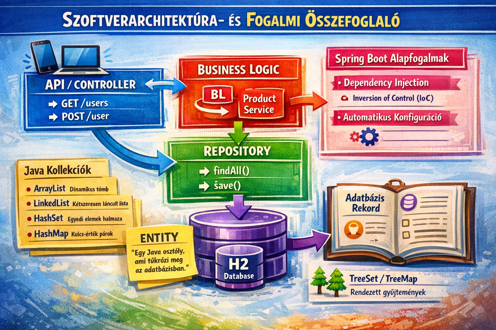
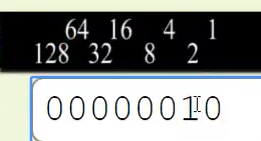
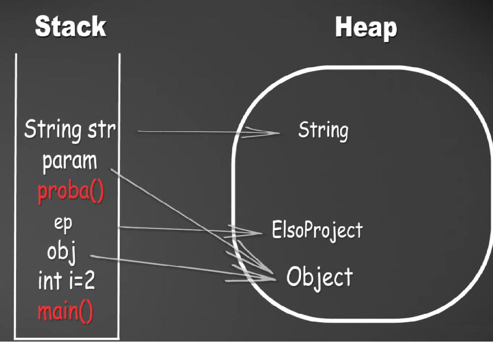
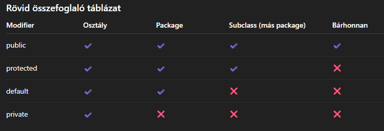
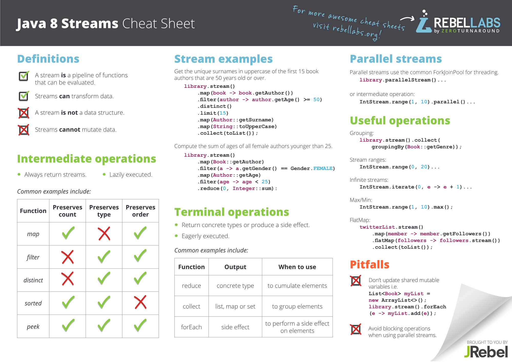
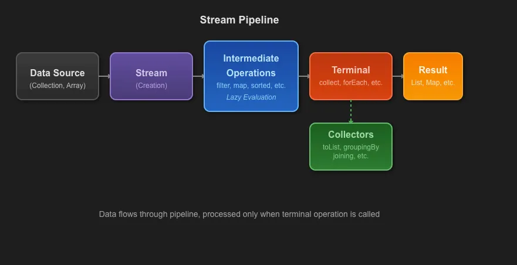

Programozás Java nyelven
Útmutató, hogyan legyél programozó:
- Nézz meg egy gyorstalpaló tananyagot.
- Készíts el 3 darab irányított (guided) projektet.
- Készíts egy saját projektet minden segítség nélkül.
Ez a jegyzet a Java programozási nyelv legfontosabb alapfogalmait foglalja össze tanulási célból.
A dokumentum bemutatja:
- a Java működésének alapjait (JVM, fordítási folyamat),
- az alapvető adattípusokat,
- az objektumorientált programozás (OOP) fő elveit,
- a metódusok, osztályok, konstruktorok és öröklődés használatát,
- valamint néhány gyakori programozási és állásinterjús kérdést.
A cél, hogy egy átlátható, gyakorlatorientált összefoglalót adjon a Java alapjairól, amely segíti a tanulást és a gyors ismétlést.
Tartalomjegyzék
- Programozás Java nyelven
- Tartalomjegyzék
- Források
- Általános infók
- Fejlesztői környezet
- Projekt importálása VS Code-ban
- Adattípusok
- Objektum orientált programozás (OOP)
- Ismétlés és könnyű állásinterjús kérdések
- Kasztolás
- Java dátum és idő kezelés (java.time)
- Math()
- Wrapper (burkoló) osztályok
- Stack, Heap és Garbage Collector
- Környezet változók és a manuális fordítás
- Véletlen mondat generátor készítés
- Tömb vs. ArrayList
- Az ArrayListek és a szülők kapcsolata
- Mit hagyott ránk az Object?
- Immutable, Final és Static
- static
- Diagramok és Kapcsolatok
- Kivételek kezelése - Try Catch Finally
- Inner és Anonim Class
- Adatbekérés a felhasználótól
- Példák
- Java Dinamikus weboldal létrehozása
- Gyakorlás gyakorlás gyakorlás
- Map
- Java Példák és Magyarázatok
- Printf
- Java Stream API
- Java Stream – Gyakori vizsgacsapdák
- Rövid összefoglaló
- Menü rendszer
- enum
- Debug
- Deadlock
Források
Sanfranciscoboljottem tananyag
SZTE - Programozás I. jegyzet
Stacks and queues
IT Szótár
Java Programozás Kezdőknek - SkillVersum
Java Streams API Explained (with examples)
Java Streams and Collectors
Java programozási nyelv
100+ JavaScript Concepts you Need to Know
Pályakezdő fullstack tutorial csomag
A sanfranciscoboljottem tananyag sorrendje:
Programozási alapismeretek
Git Alapismeretek
Java alapismeretek
SQL alapismeretek
JavaFX alapismeretek
JavaFX Középhaladó
Java Középhaladó (Vagy esetleg a szerver után.)
JDBC - Adatbázis kapcsolatok
Java szerver
Spring Boot Ismeretek
Spring Boot Ismeretek II.
Java cheat sheet magyarul Java Cheat Sheet Java Streams and Collectors: A Practical Guide and Cheat Sheet with Real-World Examples
📌 Klasszikus full-stack webalkalmazás felépítés.
React ↔ Spring (REST, JSON),
Frontend: React (JavaScript)
Backend: Spring Boot (Java)
A lenti kép magyarázata a Spring Boot kezdőknek szóló fájlban található. Itt

Általános infók
A Java egy általános célú, objektumorientált programozási nyelv. Több operációs rendszeren is futtatható (Windows, macOS, Linux stb.).
A Java nyelvet a Sun Microsystems fejlesztette ki, amelyet később az Oracle vásárolt fel.
A Java programok futtatását a JVM (Java Virtual Machine) teszi lehetővé, amely különböző operációs rendszereken is képes végrehajtani a Java bytecode-ot.
Több operációs rendszeren is lehet futtatni, pl.: windows, mac, linux. A Sun Microsystem alkotta meg a javat. Később az Oracle vette meg a céget. A JVM miatt a Java programok sok különböző operációs rendszeren futtathatók. A JVM a Java bytecode-ot (.class fájlok) futtatja, amelyeket gyakran .jar fájlba csomagolnak. A windows/linux pedig futtatja a JVM-t.
Java fordítási és futtatási folyamat
A Java egyik legfontosabb tulajdonsága a platformfüggetlenség. Ez azt jelenti, hogy egy programot egyszer kell megírni, és az különböző operációs rendszereken is futtatható.
Ez a tulajdonság a bytecode és a Java Virtual Machine (JVM) együttműködésének köszönhető.
A fordítás és futtatás lépései
Java forráskód (.java)
↓
javac fordító
↓
Bytecode (.class)
↓
Java Virtual Machine (JVM)
↓
Natív gépi kód (machine code)
- Forráskód
A fejlesztő Java forráskódot ír (.java fájlok). Ez ember által olvasható programkód.
- Fordítás (javac)
A javac fordító lefordítja a Java forráskódot bytecode-ra.
- bemenet: .java
- kimenet: .class
A bytecode egy platformfüggetlen utasításkészlet, amelyet nem közvetlenül a processzor hajt végre.
- Bytecode
A bytecode egy köztes kód, amelyet a JVM képes értelmezni. A .class fájlokat gyakran .jar (Java Archive) fájlba csomagolják, ami több class fájlt és erőforrást tartalmazhat.
- Futás a JVM-ben
A Java Virtual Machine (JVM) betölti és futtatja a bytecode-ot.
A JVM működése:
- betölti az osztályokat
- ellenőrzi a bytecode biztonságát
- végrehajtja a kódot
A végrehajtás két módon történhet:
- Interpreter – soronként értelmezi a bytecode-ot
- JIT (Just-In-Time) compiler – a gyakran futó kódrészeket natív gépi kóddá fordítja a gyorsabb futás érdekében
- Natív gépi kód
A JVM az adott operációs rendszerhez és processzorhoz igazodó machine code-ot hoz létre, amelyet a CPU közvetlenül végrehajthat.
Write Once, Run Anywhere
A Java híres elve: "Write once, run anywhere"
Ez azt jelenti:
- a programot egyszer kell lefordítani bytecode-ra
- minden platformon csak a JVM-nek kell léteznie
Például:
- Windows → Windows JVM
- Linux → Linux JVM
- macOS → macOS JVM
A bytecode mindenhol ugyanaz marad.
Java környezet komponensei
JDK – Java Development Kit (Program írása + futtatása)
A JDK a Java fejlesztéshez szükséges teljes eszközkészlet.
Tartalmazza:
- javac (fordító)
- JRE (Program futtatása)
- fejlesztői eszközök
JRE – Java Runtime Environment
A JRE a Java programok futtatásához szükséges környezet.
Tartalmazza:
- JVM (A Java program futtatása)
- Java szabványos könyvtárak
JVM – Java Virtual Machine
A JVM egy virtuális futtatókörnyezet, amely:
- betölti az osztályokat
- végrehajtja a bytecode-ot
- kezeli a memóriát
- végzi a Garbage Collectiont
A JVM szerepe
A JVM nem csak a kód futtatásáért felelős.
Feladatai például:
- Class loading – osztályok betöltése
- Bytecode verification – biztonsági ellenőrzés
- Memory management – memória kezelése
- Garbage Collection – automatikus memóriatisztítás
- JIT fordítás – teljesítmény optimalizálása
A JVM tehát egy absztrakciós réteg a Java alkalmazás és a hardver között, amely elrejti a platformfüggő részleteket a fejlesztő elől.
Fejlesztői környezet
JDoodle
Egy ideig elég az online fordító: https://www.jdoodle.com/
Visual Studio Code
Egy népszerű, ingyenes kódszerkesztő, amelyhez rengeteg bővítmény érhető el.
Részletes magyarázót a telepítéshez itt találsz.
Hasznos kiegészítők itt
Eclipse
Innen töltsd le a csomagolt változatot (zip fájl).
Ezt: Eclipse IDE for Enterprise Java and Web Developers link
A letöltött zip fájlt kicsomagoljuk, máris indítható az IDE.
Első indításkor meg kell adni egy mappát (Workspace), ahová a projektek kerülnek. Munkaterületeket váltogathatunk: File/Switch workspace
Eclipse egyik furcasága, hogy alapból nem tudunk nyitó kapcsos zárójelet írni (Alt+b), csak akkor, ha kikapcsoljuk a gyorsbillentyű hozzárendelést: Window/Preferences/General/Keys (vagy keresőben:”bind”) Szűrjünk „alt+b”-re és mindkét bejegyzésnél „Unbind command” Apply and close
Eclipse további beállítás:
Window/Preferences/General/Editors/Text Editors: pipáljuk be a Show Line numbers opciót
New Project -> Java Project -> Configure JRE-s: "Use default JRE 'jdk-25.0.1' and workspace compiler preferences" Vedd ki a pipát -> "Create module-info.java file"
Bal szélén a projekten jobb klikk package.
Billentyű parancsok: Ha elfelejtjük a main-t, akkor Main + ctrl+space ctrl+7 kommentjel kitesz/visszavesz ctrl+shift+o: Importok fixálása, valamint a nem használtakat törli. ctrl+shift+f Formázás syso + ctrl +space Egyes verziókban: sout 2x ctrl +space F11 Futtatás
Eclipse beállítása: TO DO komment kikapcsolása Eclipse-ben
Window → Preferences
Menj ide: Java → Code Style → Code Templates
A jobb oldalon keresd meg:
Code → Method body
Jelöld ki → Edit
Töröld ki ezt a sort:
// TO DO Auto-generated method stub
OK → Apply and Close
Java technológiai áttekintés és működés
Platformok: Java SE Standard Edition: általános célú platform. Java EE - Enterprise Edition: elosztott, hibatűrő rendszerek fejlesztéséhez. Jakarta EE - JE-nek 2017-től az Eclipse Foundation általi fejlesztése.
JAVA EE8 (2017) óta Jakarta EE a neve. Az Oracle átadta a specifikációt az Eclipse Foundationnek.
Futtató környezet: JRE - Java Runtime Enviroment
Fejlesztői környezet: DK - Java Development Kit
JVM – Java Virtual Machine: virtuális gép
Munkafolyamat forráskódtól futtatásig: .java → javac .class JVM → platformfüggetlen futtatás
Netbeans
netbeans+java-t töltsd le. -> Java EE változat kell. Tomcat-t rakd fel, a glasfish-t ne.
Java SE (Standard Edition): asztali alkalmazásokat lehet benne készíteni.
Java EE (Enterprise Edition): Céges környezet. Szerverek készítésehez jó.
Java FX: Segít szép grafikus környezetet létrehozni. Java Swing (régebbi) és Effect alkalmazások.
A netbeans telepítés végén a jobb alsó sarokban felajánl pár plugin-t, azokat telepítsd.
IntelliJ IDEA
Projekt importálása VS Code-ban
- Futtatás ellenőrzése
Nyomd meg az F5-öt a projekt futtatásához. Ha a projekt piros minden ellenére is a "Clean" után:
- Ellenőrizd, hogy a bal oldali sávban a "Java Projects" fül alatt látszanak-e a forrásfájlok (src).
- Ha nem látszanak, a VS Code nem projektként kezeli a mappát, csak sima fájlokként.
- JDK verzió problémák
Ha a kód mindenhol piros, lehet, hogy a VS Code nem találja a telepített Java JDK-t.
Megoldás:
- Nyomd meg Ctrl + Shift + P.
- Írd be: "Java: Configure Java Runtime".
- Válaszd ki a megfelelő JDK-t.
Adattípusok
Primitív adattípusok
8 féle primitív adattípus létezik, mindent kis betűvel kell írni programozáskor. A megadott memóriát fogja lefoglalni a változó, hiába nincsen benne semmi. A Java statikusan típusos nyelv, meg kell adni, hogy a változó szám, vagy szöveg stb formátumú.
byte
Egész szám. Tartomány: -128 - 127 Foglalt memória: 1 Byte=8 Bit Alapértéke: 0
short
Egész szám. Tartomány: -32 768 - 32 767 Foglalt memória: 2 Byte Alapértéke: 0
int
Egész szám. Tartomány: -2 milliárd - 2 milliárd Foglalt memória: 4 Byte Alapértéke: 0
long
Egész szám. Tartomány: −9 223 372 036 854 775 808 – 9 223 372 036 854 775 807 Pontos magyar elnevezés: 9 kvintillió 223 kvadrillió 372 trillió 36 billió 854 milliárd 775 millió 808 Foglalt memória: 8 Byte Alapértéke: 0
float
Lebegőpontos szám (egyszeres pontosság). Tartomány: ≈ 1.175494 × 10⁻³⁸ - ≈ 3.402823 × 10³⁸ Foglalt memória: 4 Byte Alapértéke: 5.06e2f //$5.06 \times 10^2$ Hatványozás az "e". "f" mint float.
double
Törtszám szám (kétszeres pontosság). Tartomány: 2.2250738585072014 × 10⁻³⁰⁸ - 1.7976931348623157 × 10³⁰⁸ Foglalt memória: 8 Byte Alapértéke: 0.0d //A d elhagyható az, csak arra utal, hogy double.
char
Egy karakter. Tartomány: 1 Unicode karakter (0–65.535) pl.: 65 // A Foglalt memória: 2 Byte Alapértéke: '\u0000'
boolean
Logikai. Tartomány: true/false Foglalt memória: a JVMre bízza (technikai okokból nem fix). Alapértéke: false
Röviden: byte = 1 byte short = 2 byte char = 2 byte int = 4 byte float = 4 byte double = 8 byte long = 8 byte boolean = A JVMre bízza.
Összetett adattípusok (referencia típusok)
Ezek objektumok, a heap memórián tárolódnak, és nagy kezdőbetűvel íródnak: String → karakterlánc (objektum) Array (pl. int[]) List, Map, Set saját osztályok
Az alapértelmezett értékük: null Sok függvény megvan hozzájuk írva. pl.: .Length()
Joker
Java 10-ben jelent meg 2018-ban.
var myNum = 5; // int
// var nélkül
ArrayList<String> cars = new ArrayList<String>();
// var-al rövidebb könyebben olvashatóbb.
var cars = new ArrayList<String>();
Pontosan hogyan tárolódnak a változók a memóriában
2 decimális = 10 bináris
1 byte = 8 bit, tehát 0–255 közötti egész számot lehet vele ábrázolni előjel nélküli (unsigned) formában.
Ha a byte előjeles (signed), akkor a tartománya –128…+127.
A lentiképen látszik, hogy a felső fekete hátterű értékeket kell megszorozni az alattuk lévőkkel.

Objektum orientált programozás (OOP)
Távoli példa: Két nyelv. Az angol 8 betűvel, a magyar 5 betűvel fejezi ki ugyanazt.
You drink. | Iszol.
Következő példa: Készítünk egy játékot, melyben van fű is. Leprogramozzuk a fűszálat és valahányszor szükségünk van rá elég a fűszál osztályt meghívni. Minden tulajdonsága benne lesz, pl a mozgása, felszíne.
Harmadik példa: Kocsmát építünk egy játékban. Leprogramozzuk a padlót, a pultot, ezeket bármikor meghívhatjuk újra. Mindegyik entitás, a java-ban objektum.
Osztály (tervrajz) -> Objektum (A belőle készült példány.) Még egy objektum.
Utána készítsük el az Firstproject nevű package-t.
A NetBeans-ben alapvetően megtalálható a java compiler a program fordításához.
Metódusok
void= Nincs visszatérési értéke.
String Fuggveny() {return null;} = Van visszatérési értéke.
Ökölszabály: Osztályon belül statikus metódusból nem hívhatunk meg nem statikus metódust.
NetBeans
Jobb egér gomb a kódban és Insert code -> Getter és Setter. Encapsulate Fields-t, ha bepipálod és elfelejtetted privátra állítani a változót, akkor ezt kijavítja.
VS Code
A változon nyomsz egy jobb klikket és source action-n belül lesz a konstruktor létrehozása opció.
This
Miért nem másolódnak a metódusok minden objektumba?
Ha minden objektum saját példányban tartalmazná az összes metódusát, az valóban pazarló lenne memóriában. Ehelyett a legtöbb objektumorientált nyelv ezt csinálja:
-
Az adatok (mezők, attribútumok) objektumonként külön vannak.
-
A metódusok közösek (osztályhoz vagy prototípushoz tartoznak).
Így egy metódusból egyetlen példány létezik, amit sok objektum használ.
De akkor honnan tudja a metódus, melyik objektummal dolgozzon?
👉 A this referencia miatt.
Amikor egy metódust egy objektumon keresztül hívsz meg, a rendszer automatikusan átadja azt az objektumot, amelyen a hívás történt.
Ez történik a háttérben:
obj.metodus(param1, param2)
↓
metodus(obj, param1, param2) // a this = obj
Ez az általad említett „titkos paraméter”.
Példák
Első és második példa:
package firstproject;
//Az osztálynevet mindig nagy betűvel kezd.
public class FirstProject {
//Ökölszabály: Osztályon belül statikus metódusból nem hívhatunk meg nem statikus metódust.
public static void main(String[] args) {
//String result = censor("A kutya nagyon aranyos kutya.", "kutya", "macska");
// System.out.println(result);
//Új sablont hozok létre, példányosítom.
Human first = new Human();
first.setName("J"); //Beállítjuk a konstruktorral.
System.out.println(first.getName()); //Lehívjuk a konstruktoral.
first.writeMyName();
Human second = new Human();
System.out.println(second.getName());
}
// Metódus.
// Ha nem írod oda a hozzáférési módosítót, akkor package-private (default) lesz.
// Ez azt jelenti, hogy csak ugyanabban a package-ben érhető el.
// void = nincs visszatérési értéke.
// String fuggveny() { return null; } = van visszatérési értéke.
// A zárójelben a paraméterek (argumentumok) vannak.
public static String censor(String text, String toChange, String newWord) {
if (text.contains(toChange)) {
}
text = text.replaceAll(toChange, newWord); // (keresett szó, új szó)
return text;
}
}
package firstproject;
//Sablon. Blueprint.
public class Human {
//Oszály változó, nem tartozik konkrét függvényhez.
//Privátra kell állítani, hogy a Main-ből ne lehessen elérni.
private String name = "Gy";
private int age;
//Metódus, aminek nincs visszatérési értéke, de kiírja az értéket.
void writeMyName() {
System.out.println(name);
}
/*A getter és setter konstruktorok lényege, hogy ne tudjuk közvetlenül megváltoztatni a változó értékét. */
public String getName() {
return this.name; //this = Ez az osztály változó, amit fent privátként deklaráltál. Most épp a Human.
}
public void setName(String name) {
this.name = name;
}
public int getAge() {
return age;
}
public void setAge(int age) {
this.age = age;
}
}
Háromoperandusú Operátor
//Új sablont hozok létre, példányosítom.
Human first = new Human();
first.setName("Gy");
first.setAge(20);
//Háromoperandusú Operátor (Ternary Operator)
//Igaz ez ? Igen : Nem
System.out.println(first.getName() == null ? "Nincs név" : "Van név.\n" + first.getName());
/*
if (first.getName() == null) {
System.out.println("Nincs név.");
System.out.println(first.getName());
} else {
System.out.println("Van. név.");
System.out.println(first.getName()); //Lehívjuk a konstruktoral.
}
*/
Változó ellenőrzése (üres? != && .isBlank())
String myStr1 = "Hello";
String myStr2 = "";
String myStr3 = null;
String myStr4 = " ";
// --- null ellenőrzés ---
System.out.println("myStr1 == null: " + (myStr1 == null)); //false
System.out.println("myStr2 == null: " + (myStr2 == null)); //false
System.out.println("myStr3 == null: " + (myStr3 == null)); //true
System.out.println();
// --- isEmpty() ---
System.out.println("myStr1.isEmpty(): " + myStr1.isEmpty()); //false
System.out.println("myStr2.isEmpty(): " + myStr2.isEmpty()); //true
//myStr3.isEmpty() -> NullPointerException!
System.out.println("myStr4.isEmpty(): " + myStr4.isEmpty()); //false
System.out.println();
// --- isBlank() ---
System.out.println("myStr1.isBlank(): " + myStr1.isBlank()); //false
System.out.println("myStr2.isBlank(): " + myStr2.isBlank()); //true
System.out.println("myStr4.isBlank(): " + myStr4.isBlank()); //true
System.out.println();
// --- length() ---
System.out.println("myStr1 length: " + myStr1.length()); //5
System.out.println("myStr2 length: " + myStr2.length()); //0
System.out.println("myStr4 length: " + myStr4.length()); //3
System.out.println();
// --- safe check (null + empty/blank) --- EZT HASZNÁLD!
if (myStr1 != null && !myStr1.isBlank()) { //myStr1 has meaningful content
/*
Hiba: Ha az && operátort használod, a program megpróbálja lefuttatni az .isEmpty()-t egy null objektumon, ami azonnali NullPointerException-t (összeomlást) okoz.
*/
System.out.println("myStr1 has meaningful content");
}
if (myStr3 != null || !myStr3.isBlank()) { //myStr3 is null or blank
System.out.println("myStr3 has meaningful content");
} else {
System.out.println("myStr3 is null or blank");
}
System.out.println();
// --- equals biztonságos használat ---
System.out.println("\"\".equals(myStr2): " + "".equals(myStr2)); //true
System.out.println("\"\".equals(myStr3): " + "".equals(myStr3)); // nem dob hibát és false
Javadoc
Ezzel a jelöléssel meg fog jelenni a crtl+space-el a kommented a metódus meghívásakor.
/*_ A getter és setter konstruktorok lényege, hogy ne tudjuk közvetlenül megváltoztatni a változó értékét. _/ public String getName() { return this.name; //this = Ez az osztály változó, amit fent privátként deklaráltál. Most épp a Human. }
Logika
Human valami = new Human();
String thing = "Alma";
String thing2 = new String("Alma");
System.out.println(thing + "\n" + thing2);
System.out.println(thing.charAt(0)); //Az első karaktert adja vissza.
thing.length(); //mérete, output: 4
Polimorfizmus (Többalakúság)
A megírt kód újrafelhasználása, pl.: ha már létre van hozva az állat osztály, akkor azt lehet többször is használni. Mindegyik osztály ősosztálya az Object.
package firstproject;
//Öröklés. Így tudod használni az Animal osztály getter és setterjét.
//Nincsen többszörös öröklődés a java-ban, ebben a formában, csak hosszú többszörös örökléssel. pl.: Gerincesek -> NAgy macska -> Macska.
public class Cat extends Animal {
public void meow() {
System.out.println("MEOW!");
}
}
Másik osztály-ban:
public static void main(String[] args) {
Cat macska = new Cat();
Cat macska2 = new Cat();
//Azért false az értéke, mert nem az értéket, hanem a referenciákat hasonlítja össze, macska és macska2 két külön objektum a memóriában.
System.out.println(macska.equals(macska2));
macska.meow();
}
Öröklés és Override
Annotáció (annotation) egy metaadat, amivel osztályokat, metódusokat, változókat stb. jelölünk meg, és amit a fordító vagy futásidőben a program fel tud dolgozni.
@Override //Felülírás.
public void makeSound() {
System.out.println("MEOW!");
}
}
Elérési módosítók:
4 féle láthatóság van, amiből 3-hoz kapcsolódik kulcsszó (private, protected, public), az utolsó pedig az alapértelmezett eset, amire szokás package private-ként hivatkozni.
Public: Nyilvános, bárhonnan el lehet érni.
Protected:
A protected metódusokat, csak az örökléssel létrehozott osztályok használhatják.
Abstract:
Az asbsztrakt osztályok nem példányosíthatók.
Ezt nem lehet csinálni:
abstract class Animal {}
Animal állat =new Animal();
Interfész
Minden interface alapból public abstract, ezért ez a kettő ugyanazt jelenti:
interface Pet {
void play();
}
és
interface Pet {
public abstract void play();
}
Ez egy nyilvántartás, hogy a háziállatoknak mi a képességük.
abstract interface Pet {
public void cuddle();
public void sit();
public void layDown();
}
Implementáljuk a Pet interfészt, után kötelező felülírni a metódusokat.
Jobb klikk a Cat szón és Source Action -> Override/Implement Methods... -> Válaszd ki a metódusokat.
Fontos infó, hogy bármennyi infészt lehet implementálni, nincs megkötés mint az öröklésnél.
public class Cat extends Animal implements Pet {
@Override //Felülírás.
public void makeSound() {
System.out.println("MEOW!");
}
@Override
public void cuddle() {
}
@Override
public void layDown() {
}
@Override
public void sit() {
}
}
Konstruktor
A konstruktor, csak egyszer hívható meg, amikor az objektum létrejön. Nincs meghatározva, hogy van-e visszatérési értéke, avagy nincs.
A konstruktor neve megegyezik az osztályéval, ha nem hozod létre, akkor az IDE automatikusan létrehozza.
Amikor létre jön az objektum, akkor automatikusan lefut.
Első módszer a név megváltoztatására:
Main-ben:
Cat macska = new Cat();
macska.setName("G");
System.out.println(macska.getName()); //output: G
Második módszer a név megváltoztatására:
A privát változót nem éri el az öröklőtt osztály, ezért kell a protected.
abstract class Animal {
protected String name;
}
// Ez a konstruktor:
public Cat() {
this.name = "Cirmi";
}
Main-ben:
//new Cat(); -> Rész a konstruktor.
Cat macska = new Cat();
System.out.println(macska.getName()); //output: Cirmi
Harmadik módszer a név megváltoztatására:
Maradt privát a name változó és a setName metódus meghívásával módosítjuk a name értékét.
public Cat() {
this.setName("Dörmi");
}
Main-ben:
//new Cat(); -> Konstruktor.
Cat macska = new Cat();
System.out.println(macska.getName());
Negyedik módszer a név megváltoztatására:
Többféle konstruktort is létre lehet hozni, de az alap üres konstruktort ebben az esetben neked kell külön létrehoznod.
public Cat(String name) {
this.setName(name);
}
Main-ben:
//new Cat(); -> Konstruktor.
Cat macska = new Cat("Cirmos");
System.out.println(macska.getName());
Másik konstruktor:
public class Cat(){
public Cat(String name,
int weight
) {
this.setName(name);
this.setWeight(weight);
}
}
Main-ben:
Cat macska = new Cat("J", 5);
System.out.println(macska.getName() + " " + macska.getWeight() + " kg");
Overloading (túlterhelés)
Overloading akkor történik, amikor azonos nevű konstruktorok vagy metódusok vannak egy osztályban, de a paraméterlistájuk különbözik. Ugyanez igaz a metódusokra is.
Mit jelent, hogy különbözik a paraméterlista?
Legalább az egyiknek igaznak kell lennie:
-
más paraméterszám, vagy
-
más paramétertípus, vagy
-
más sorrendű paramétertípus.
⚠️ A paraméternevek NEM számítanak, csak a típus és a sorrend!
Super
Az első parancsnak kell lennie. A super mindig arra utal akitől öröklök.
public class Cat extends Animal {
public Cat() {
//Az Animal konstruktorát hívja meg.
super();
//Az Animal osztály implementációját is meg lehet hívni. Ősosztály metódusát hívjuk meg.
super.makeSound();
}
}
OOP alapelve
Íme az OOP (Objektumorientált Programozás) négy alappillére, mindegyikhez egy rövid magyarázattal és egy-egy gyakorlati példával, hogy könnyen megjegyezhető legyen:
- Encapsulation (Egységbezárás) Lényege: Az adatok (mezők) és az rajtuk végzett műveletek (metódusok) egy egységbe (osztályba) zárása, miközben az adatokhoz való közvetlen hozzáférést korlátozzuk (pl. private módosítóval).
Példa: Egy Bankszamla osztályban az egyenleg változó privát, így nem írható át kívülről tetszőlegesen, csak a befizet() vagy kivesz() metódusokon keresztül, amik ellenőrizni tudják a művelet érvényességét.
- Inheritance (Öröklődés) Lényege: Lehetővé teszi, hogy egy osztály (gyerekosztály) átvegye egy másik osztály (szülőosztály) tulajdonságait és viselkedését, így elkerülhető a kódismétlés.
Példa: Van egy általános Jarmu szülőosztályod (aminek van sebesseg mezője), és ebből származtatod az Auto és Motor osztályokat, amik automatikusan megkapják a sebesség kezelését, de hozzáadhatnak saját extrákat.
- Polymorphism (Többalakúság) Lényege: Egyazon metódushívás különböző módon viselkedhet attól függően, hogy milyen típusú objektumra hívjuk meg (gyakran interfészeken vagy felüldefiniáláson keresztül).
Példa: Van egy Allat osztályod hangotAd() metódussal. Ha a Kutya objektumra hívod meg, azt írja ki, hogy "Vau", ha a Macska objektumra, akkor azt, hogy "Miau" – a hívó kódnak viszont nem kell tudnia, pontosan milyen állattal dolgozik.
- Abstraction (Absztrakció) Lényege: A lényeges jellemzők kiemelése és a belső megvalósítás részleteinek elrejtése; csak azt mutatjuk meg a külvilágnak, "mit" csinál az objektum, nem azt, hogy "hogyan".
Példa: Egy Kavefozo gombját megnyomod (interfész), és megkapod a kávét. Nem kell tudnod, pontosan hány bár nyomáson vagy milyen hőmérsékleten dolgozik belül a gép.
Bónusz: Interface vs. Abstract Class (Interjú kedvenc!) Ez a két eszköz segíti az absztrakciót, de más a céljuk:
Interface: Egy "szerződés". Csak azt mondja meg, hogy egy osztálynak mire kell képesnek lennie (pl. Minden ami ehető, rendelkezzen egy egyel() metódussal). Egy osztály több interfészt is megvalósíthat.
Abstract Class: Egy "félkész sablon". Tartalmazhat közös kódot (megvalósított metódusokat) és absztrakt metódusokat is. Akkor használjuk, ha az osztályok között szoros "egyfajta" (is-a) kapcsolat van (pl. minden Kutya egy Allat).
Ismétlés és könnyű állásinterjús kérdések
Konkatenáció
//Az ln csinál utána egy sortörést.
System.out.println(1 + 1 + " a " + 1 + 1); //output: 2 a 11
Miért?
- Balról jobbra értékel.
- Amíg szám + szám → összeadás.
- Amint megjelenik a String, onnantól konkatenáció.
Becsapós kérdés
char first = 'a';
int second = 2;
String third = first; //❌ NEM fut le. A Java nem konvertál automatikusan primitív típust String-gé.
String fourst = "" + first; //✅ Lefut.
fourst = "" + second; //✅ Lefut.
Mi történik itt?
- "" → String
- +first → String konkatenáció
- A char automatikusan String - gé alakul.
A kasztolás külön fejezetben lesz szó a további módszerekről.
2. Becsapós kérdés
char first = 'a';
int second = 2;
System.out.println(first + second); //output: 99
👉 first = 'a' → ASCII/Unicode érték: 97
Sortörések
//Az ln csinál utána egy sortörést.
System.out.println("Ah"); //output: Ah és sortörés.
System.out.print("a"); //Nincs sortörés.
System.out.print("\n"); //Manuális sortörés.
Lefut-e?
int x = 22;
byte b = x;
❌ Nem fut le. Mi a probléma?
int → 32 bites byte → 8 bites (−128 … 127)
A Java nem engedi az automatikus (implicit) szűkítést, mert adatvesztés történhetne.
byte b = 22;
int x = b; //Így működik, mert az int sokkal nagyobb.
Explicit cast (szűkítés)
int x = 22;
byte b = (byte) x;
✅ Lefordul ⚠️ A programozó felelőssége az adatvesztés.
Overflow (Túlcsordulás)
int x = 130;
byte b = (byte) x;
System.out.println(b); //output: -126
A byte tartománya túllépésre kerül → körbefordul.
Típuskonverzió szabály (Kényszerítés)
Szélesítés (widening) → automatikus
byte -> short -> char -> int -> long -> float -> double
Szűkítés (narrowing)
double -> float -> long -> int -> char -> short -> byte
❌ nem automatikus ✅ csak cast-tal
double → int szűkítő (narrowing) konverzió
double d = 3.5;
int i = d; //❌ Fordítási hiba.
int i = (int) d;
System.out.println(i); // Mindig a tizedespont jobb oldalát eldobja. output: 3
Változónevek szabályai
📌 Változónév:
- nem kezdődhet számmal;
- kezdődhet betűvel, _-al vagy $-al;
- camelCase ajánlott Java-ban, mert a változó és a függvényneveket kisbetűvel kezdjük.
Számmal soha nem kezdünk változó deklarálást.
int 1stVariable; //❌ Nem jó!
int st1Variable; //✅ Jó.
Kasztolás
Az Object osztálytól örököli a metódusokat az osztályunk. pl.: .equals()
A primitívek speciálisak, az objektumok nem, azok minding ugyanúgy működnek.
Helyes megoldások char → String konvertálásra
✅ 1. Konkatenáció (gyakori, egyszerű, inkább NE használd intrejún)
String s = "" + first;
✅ 2. String.valueOf() (legbiztonságosabb)
String s = String.valueOf(first);
✅ 3. Character.toString() (szabályos OOP megoldás)
String s = Character.toString(first);
//A Character örököl az Object osztálytól, de itt nem az Object toString() metódusa hívódik meg.
//Hanem a Character.toString(char) statikus metódus.
Parse
Négy fajtája van:
- String → int
- String → double
- String → long
- String → boolean
Példa:
//String → int
int szam = Integer.parseInt("123");
Visszafelé (number → String)
String text = String.valueOf(123);
Ha hibás formátumba kasznolnál, akkor NumberFormatException-t kapsz.
Java dátum és idő kezelés (java.time)
A Java 8 óta a dátum és idő kezelésére a java.time API csomagot használjuk. Ez leváltotta a régi Date és Calendar osztályokat.
Előnyei:
- immutable (nem módosítható objektumok)
- biztonságosabb
- könnyebb használni
- jobban olvasható
Legfontosabb osztályok
| Osztály | Mire használjuk |
| ----------------- | --------------- |
| LocalDate | csak dátum |
| LocalTime | csak idő |
| LocalDateTime | dátum + idő |
| Period | dátum különbség |
| Duration | idő különbség |
| DateTimeFormatter | formázás |
LocalDate (dátum kezelés)
A LocalDate év, hónap és nap tárolására szolgál.
Aktuális dátum
LocalDate today = LocalDate.now();
System.out.println(today);
példa kimenet: 2026-03-15
Dátum létrehozása
LocalDate date = LocalDate.of(2024, 5, 10);
System.out.println(date);
kimenet: 2024-05-10
Év, hónap, nap lekérése
LocalDate date = LocalDate.now();
int ev = date.getYear();
int honap = date.getMonthValue();
int nap = date.getDayOfMonth();
Dátum módosítása
A LocalDate immutable, ezért minden művelet új objektumot ad vissza.
Év módosítása
LocalDate ujDatum = date.withYear(2030);
Nap hozzáadása
LocalDate ujDatum = date.plusDays(10);
*Nap kivonása
LocalDate ujDatum = date.minusDays(5);
Év hozzáadása
LocalDate ujDatum = date.plusYears(2);
Dátum összehasonlítása
LocalDate d1 = LocalDate.of(2024, 5, 1);
LocalDate d2 = LocalDate.of(2025, 5, 1);
d1.isBefore(d2); // true
d1.isAfter(d2); //false
d1.isEqual(d2); //false
Két dátum különbsége
A Period osztály segítségével számolhatjuk ki.
LocalDate szuletes = LocalDate.of(2000, 3, 10);
LocalDate today = LocalDate.now();
Period kulonbseg = Period.between(szuletes, today);
System.out.println(kulonbseg.getYears());
Ez kiszámolja az életkort években.
LocalTime (csak idő)
LocalTime time = LocalTime.now();
System.out.println(time);
példa: 18:45:21.123
LocalDateTime (dátum + idő)
LocalDateTime now = LocalDateTime.now();
System.out.println(now);
példa: 2026-03-15T18:45:21
Dátum formázása
A DateTimeFormatter segítségével.
LocalDate today = LocalDate.now();
DateTimeFormatter formatter =
DateTimeFormatter.ofPattern("yyyy.MM.dd");
System.out.println(today.format(formatter));
kimenet: 2026.03.15
Gyakori formátumok
| Formátum | Jelentés |
| -------- | --------- |
| `yyyy` | év |
| `MM` | hónap |
| `dd` | nap |
| `HH` | óra |
| `mm` | perc |
| `ss` | másodperc |
Példa dátum + idő formázás
LocalDateTime now = LocalDateTime.now();
DateTimeFormatter formatter =
DateTimeFormatter.ofPattern("yyyy.MM.dd HH:mm");
System.out.println(now.format(formatter));
példa kimenet
2026.03.15 18:45
String → dátum
String datum = "2024-05-10";
LocalDate date = LocalDate.parse(datum);
Dátum → String
LocalDate date = LocalDate.now();
String text = date.toString();
Tipikus Java feladatok
Java vizsgákon gyakran kérik:
- aktuális dátum lekérése
- életkor számítása
- dátum összehasonlítása
- dátum formázása
- dátumhoz nap / év hozzáadása
Rövid cheat sheet
LocalDate.now();
LocalDate.of(2024,5,10)
date.getYear()
date.getMonthValue()
date.getDayOfMonth()
date.plusDays(5)
date.plusYears(1)
date.isBefore(d2)
date.isAfter(d2)
LocalDate.parse("2024-05-10")
date.format(DateTimeFormatter.ofPattern("yyyy.MM.dd"))
Math()
A Math osztály matematikai műveletek és konstansok elérését biztosítja: Használata Math.<metódus() vagy konstans>; Függvények:
abs(érték) // abszolút értékkel tér vissza min(érték1, érték2) //két szám közül a kisebbel tér vissza
max(érték1, érték2)- két szám közül a nagyobbal tér vissza sqrt(érték)- a szám négyzetgyökével tér vissza pow(alap, kitevő)- az alap hatványkitevőre emelésével tér vissza round(érték)- a legközelebbi egész számra kerekít floor(érték) //Lefelé kerekítés, de nem levágás. p.l: -6.99 => -7 //Felfelé kerekítés. Math.floor(6.99) => 6 //Nem csak kerekítés. ceil(érték) // Felfelé kerekítés, mindig. 6.31 => 7 | -6.3 => -6
Konstansok: Pi (3.141592653589793) E (2.718281828459045)
Példák:
ceil: Visszaadja a legkisebb egész számot (double formában), ami nem kisebb, mint az érték. Negatív számnál a felfelé kerekítés → az érték kevésbé negatív lesz. 6.31 -> 7.0 6.99 -> 7.0 -6.3 -> -6.0 -6.99 -> -6.0
floor: Visszaadja a legnagyobb egész számot (double formában), ami nem nagyobb, mint az érték. Negatív számnál lefelé kerekít → az érték kisebb lesz. 6.99 -> 6.0 6.01 -> 6.0 -6.01 -> -7.0 -6.99 -> -7.0
Wrapper (burkoló) osztályok
Java-ban a wrapper (burkoló) osztályok a primitív adattípusok objektum megfelelői.
Primitív típus → Wrapper osztály
boolean → Boolean
byte → Byte
short → Short
int → Integer
long → Long
float → Float
double → Double
char → Character
Mire jók a wrapper osztályok?
- Objektumként kezelhetők (pl. kollekciókban: List, Map).
- Tartalmaznak hasznos metódusokat (pl. parseInt, valueOf).
- Lehetővé teszik az autoboxing / unboxing használatát.
- Könyebb velük bonyolultabb dolgokat elvégezni.
Példa (autoboxing)
int x = 5;
Integer y = x; // autoboxing
int z = y; // unboxing
Példa az automatikus becsomagolásra.
public static void main(String[] args) {
int second = 2;
test(second);
}
//A java automatikusan becsomagolja az int-et egy Integer objektumba, így lehet váltogatni, működik ugyanez fordítva is.
public static void test(Integer c) {
System.out.println(c);
}
Példa a primitív és objektum másolásra:
Lemásolja az első értékét. Primitív típus → érték másolódik.
int a = 1;
int b = a; //
b++;
System.out.println(" a: " + a + " ; b: " + b);
Mindkét változó ugyanarra az objektumra mutat.
setName("Fluffy") az egyetlen közös objektumot módosítja.
Objektumoknál nem az objektum másolódik, csak a memóriacím(referencia).
Cat macska = new Cat(); //macska létrehoz egy Cat objektumot
Cat macska2 = macska; //→ referencia másolása
macska.setName("Fluffy");
System.out.println(macska.getName() + " " + macska2.getName()); //output: Fluffy Fluffy
Fordítási hiba ≠ futási hiba
❌ Fordítási hiba (compile-time error): A fordító (javac) nem tudja lefordítani a kódot. Pl.: hiányzik a pontosvessző, szintaktikai hiba.
👉 A program el sem indul.
Példa:
double → int szűkítő (narrowing) konverzió
Java nem engedi automatikusan az adatvesztéssel járó konverziót.
double d = 3.5;
int i = d; //❌ Fordítási hiba.
💥 Futási hiba (runtime error)
👉 A program elindul, de futás közben elszáll.
Mikor történik?
- A kód szintaktikailag helyes.
- Logikai vagy környezeti probléma futás közben. pl.: 0-val való osztás.
Explicit kasztolás (cast)
double d = 3.5;
int i = (int) d;
System.out.println(i); // Mindig a tizedespont jobb oldalát eldobja. output: 3
System.out.println((int) 3.9); // 3
System.out.println((int) -3.9); // -3
Stack, Heap és Garbage Collector
A FIFO és LIFO adatszervezési elvek azt írják le, milyen sorrendben kerülnek ki az elemek egy tárolóból.
FIFO – First In, First Out „Aki először jött, először megy.”
LIFO – First In, Last Out „Aki először jött, utoljára megy.”
Mint a nyomtatópapíroknál, ha eggyesével rakod be a papírokat a tárolóba. Íhy működik a verem, vagyis stack.

Példa:
public class ElsoProject {
public static void main(String[] args) {
int i = 2;
Object obj = new Object();
ElsoProject ep = new ElsoProject(); //Osztály példányosítása.
ep.proba(obj);
}
//Azért nem kell ide a static, mert példányosítottuk az osztályt.
private void proba(Object param) {
String str = param.toString();
System.out.println(str); //Ennél a sornál már kikerült a lenti képen lévő proba, param és str a Stack-ből.
}
}
Stack
Verem. Gyorsabb memória terület.
A Stack egy memóriaterület, ahol a program lokális változóit (int, double, boolean, stb.) és függvényhívások adatait tárolják. Itt tárolódik maga a változó neve és a referencia (a címe a memóriában)
LIFO (Last In, First Out) elven működik – az utolsó elem, amit betettünk, az első, amit kiveszünk.
Heap
Kupac. A Heap a dinamikusan foglalt memória helye, ahová a program futás közben hoz létre objektumokat. Itt tárolódik a tényleges adat/objektum.
Maga az Objektum a Heapben tárolódik, a stack-ban, csak hivatkozunk rá.
Minden, ami benne van egy osztályban az az objektum része, vagyis a Heap-ben tárolódik, az osztályváltozók (int, String) is.

Példa:
public static void main(String[] args) {
Object o1 = new Object();
o1 = null;
o1 = new Object(); //Ne ugyanaz, mint a két sorral feljebb lévő.
}
private void proba(Object param) {
}
Mi történik?
-
new Object()
→ objektum létrejön a heapben -
o1
→ hivatkozás, ami a stackben van (o1 = null;)
→ a heapben lévő objektum címére mutat
Főbb nem-primitív típusok
A nem-primitív (non-primitive) adattípusokat más néven referencia típusoknak is nevezzük. Ahogy a neve is sugallja, ezek nem közvetlenül az értéket tárolják (mint pl. egy számot), hanem egy referenciát (memóriacímet) arra a helyre, ahol az objektum található.
Strings (Karakterláncok): Szövegek tárolására szolgálnak. Bár a Java-ban kiemelt szerepük van, valójában objektumok.
Arrays (Tömbök): Azonos típusú elemek gyűjteménye (lehet primitív vagy objektum is benne).
Classes (Osztályok): Felhasználó által definiált sablonok, amelyekből objektumok hozhatók létre.
Interfaces (Interfészek): Absztrakt típusok, amelyek előírják, hogy egy osztálynak milyen metódusokat kell megvalósítania.
Primitív vs. Nem-primitív: A legfontosabb különbségek
| Jellemző | Primitív típusok (pl. int, boolean) |Nem-primitív típusok (pl. String, Array)
| Definíció | Előre definiáltak a Java nyelvben. | A programozó hozza létre őket (kivéve a String-et).
| Metódusok | Nincsenek metódusaik, csak értéket tárolnak.| Vannak metódusaik, amikkel műveleteket végezhetünk.
| Érték | Mindig van értékük (nem lehetnek nullák). | Lehet az értékük null (ha nem mutatnak sehova).
| Írásmód | Kisbetűvel kezdődnek (pl. int). | Általában nagybetűvel kezdődnek (pl. String).
| Méret | A típustól függ (fix méret). Kiv: boolean | Minden referencia azonos méretű a memóriában.
Garbage Collector (Szemétgyűjtő)
A Garbage Collector (GC) egy automatikus memória-kezelő mechanizmus, ami a Heap-en lévő, már nem használt objektumokat felszabadítja. Figyeli, hogy mely objektumokra már nincs hivatkozás (pl. minden változó, ami mutat rá, megszűnt). Eltávolítja ezeket a memória felszabadításához. Nem garantált azonnali felszabadítás.
Környezet változók és a manuális fordítás
Új JDK letöltése innen.
Win + S → "environment variables" → Edit the system environment variables.
Itt láthatók a környezeti változók, amiket a géped használ.
Kattints a Environment Variables… gombra.
System variables alatt: kattints a New… gombra (vagy keresd a meglévőt, ha PATH-ról van szó).
Nyomj ráa Path-ra és add hozzá újként.
Például JDK beállításához:
- Variable name: JAVA_HOME
- Variable value: C:\Program Files\Java\jdk-25 (a te telepítési útvonalad szerint)
PATH módosítása (hogy a CMD felismerje a java és javac parancsokat):
Alatta lesz:
-
Keresd meg a Path változót → Edit → New → add:
%JAVA_HOME%\bin
-
OK → OK → OK
-
CMD ellenőrzés
Nyisd meg a Command Prompt-ot (Win + R → cmd → Enter).
Írd be:
java -version
javac -version
Ha mindkettő verziót visszaad, sikeres a beállítás.
- Java fájl futtatása
Navigálj a mappába:
cd C:\útvonal\a\projektedhez
Futtasd:
javac FajlNeve.java
java FajlNeve
Véletlen mondat generátor készítés
public class SentenceGenerator {
public static void main(String[] args) {
Game game = new Game();
System.out.println(game.generator());
}
}
public class Game {
public String generator() {
String[] firstWord = {"Nagyon jó", "Megbízható", "Érdeklődő", "Szorgalmas", "Türelmes", "Tökéletes"};
String[] secondWord = {"megoldás", "lehetőség", "kivitelezés"};
String[] thirdWord = {"neked!", "nekünk!", "mindenkinek!", "az egész világnak!"};
int oneLength = firstWord.length;
int secondLength = secondWord.length;
int thirdLength = thirdWord.length;
//Math.random() 0 0.999999 közötti számod ad vissza.
int random1 = (int) (Math.random() * oneLength);
int random2 = (int) (Math.random() * secondLength);
int random3 = (int) (Math.random() * thirdLength);
//0.1 - generátor X 5 = 0.5
//0.9 - generátor X 5 = 4.5
//Mivel az (int) kasztolás leveszi a tizedes utáni értéket.
//0-4 köz9tt értéket kapunk visza.
String sentence = firstWord[(int) (Math.random() * firstWord.length)] + " " + secondWord[random2] + " " + thirdWord[random3];
return sentence;
}
}
Tömb vs. ArrayList
Tömb (Array)
A tömb statikus, ha törölsz belőle egy elemet, akkor sem megy össze és meg kell adni az elején, hogy mekkora lesz.
Példák:
String[] simpleArray0; //Deklaráció.
simpleArray0 = new String[]{"alma", "körte"}; //Nem kötelező egyből inicializálni. alma= 0. elem, körte= 1. elem
System.out.println(simpleArray0[2]); //Ilyenkor még nem jelez hibát, hanem majd futási időben fog.
A tömb nem univerzálisan a leggyorsabb megoldás – a hatékonyság mindig attól függ, milyen műveleteket kell végrehajtani és milyen gyakran.
Röviden:
- Olvasás index alapján → tömb nagyon gyors
- Beszúrás / törlés → tömb gyakran lassú
- Keresés kulcs alapján → hash alapú struktúra gyorsabb
- Dinamikusan változó adatmennyiség → lista vagy más adatszerkezet előnyösebb
👉 A jó megoldás kiválasztása mindig a feladat jellegétől, az adatmérettől és a használati mintától függ, nem önmagában az adatszerkezettől.
A tömb tud tárolni primitíveket.
Tömb értékadása
Deklarálás + értékadás egy sorban
String[] simpleArray0 = new String[]{"alma", "körte"};
Deklarálás külön, értékadás később
String[] simpleArray0 = new String[2];
simpleArray0 = new String[]{"alma", "körte"};
Méret megadása, majd elemenkénti értékadás
String[] simpleArray0 = new String[2];
simpleArray0[0] = "alma";
simpleArray0[1] = "körte";
Tömb újraértékadása (felülírás)
simpleArray0 = new String[] {"banán", "barack"};
Értékadás ciklussal
for (int i = 0; i < tomb.length; i++) {
simpleArray0[i] = "elem " + i;
}
ArrayList
Az ArrayList dinamikusan tudja változtatni a méretét és, csak objektumokat lehet bele rakni. Fontos, hogy be kell importálni felül.
import java.util.ArrayList;
ArrayList<String> list = new ArrayList<>();
//Az array tudja változtatni a méretét.
list.add("alma");
list.add("körte");
list.remove(0);
System.out.println("0. elem: " + list.get(0));
list.size(); //output: 1
Nem tud tárolni primitíveket, csak wrapper osztályokat.
Például:
ArrayList<Integer> list = new ArrayList<>();
list.add(2); //int-t át tud konvertálni Integerré.
A tömbök természetesen lehetnek többdimenziósak.
ArrayList esetén is létrehozható többdimenziós struktúra, de ehhez egymásba ágyazott listákat kell használni.
tomb[3][3];
Az ArrayListek és a szülők kapcsolata
public static void main(String[] args) {
//Nem primitíveket, hanem objektumokat tárol.
//Cat egy osztály → referencia típus.
ArrayList<Cat> cats = new ArrayList<>();
//Java 7+ verzióban elég a jobb oldalon az üres <>, a típus öröklődik a bal oldalról.
//Régebben be kellett írni a jobb oldalra a Cat-et.
//ArrayList<Cat> cats = new ArrayList<Cat>();
Cat sziamiau = new Cat("Sziamiau");
cats.add(sziamiau); //Ha ezt nem adjuk meg, akkor üres lesz az ArrayList.
//Elkerüljük az IndexOutOfBoundsException-t hibát.
if (!cats.isEmpty()) { //Ha nem üres.
//cats.get(0) → visszaadja az első Cat referenciát. output: firstproject.Cat@1f32e575
System.out.println("Neve: " + cats.get(0).getName()); //output: Sziamiau
} else {
System.out.println("Üres az ArrayList.");
}
}
ArrayList használata az örökléssel
Ez a kód jól illusztrálja a polimorfizmust:
- Az ArrayList típusát az ősosztály adja.
- A konkrét objektum lehet leszármazott (Cat).
- A Cat osztály metódusai nem lesznek elérhetőek.
public static void main(String[] args) {
//ArrayList létrehozása az ősosztály típusával.
//Animal az ősosztály, a Cat pedig egy leszármazott.
//Tárol objektumokat, nem primitíveket.
ArrayList<Animal> cats = new ArrayList<>();
//Ez lehetséges, mert minden Cat egy Animal, az öröklés miatt.
Cat sziamiau = new Cat("Sziamiau");
cats.add(sziamiau);
if (!cats.isEmpty()) { //Ha nem üres.
//cats.get(0) → visszaad egy Animal referenciát, ami valójában Cat típusú objektumra mutat.
System.out.println("Neve: " + cats.get(0).getName());
} else {
System.out.println("Üres az ArrayList.");
}
}
Osztály kasztolása
Cat osztályban:
public void purr() {
System.out.println("Dorombolok.");
}
public static void main(String[] args) {
//Polimorfizmus
//cats listája Animal típusú referenciákat tárol.
//Cat egy leszármazott osztály, ezért hozzáadható.
//Az ArrayList viszont csak Animal referenciákat ismer,
//így a Cat-hez speciális metódus (purr()) nem érhető el közvetlenül.
ArrayList<Animal> cats = new ArrayList<>();
Cat sziamiau = new Cat("Sziamiau");
cats.add(sziamiau);
//cats.get(0) visszaad egy Animal referenciát, ami valójában egy Cat objektum.
//A kasztolás (Cat) lehetővé teszi, hogy a Cat-specifikus metódusokat meghívd.
Cat cat = (Cat) cats.get(0);
//Most már elérhető a Cat osztály saját metódusa (purr()), mert a referenciát Cat típusúvá alakítottuk.
cat.purr(); //Dorombolok.
}
Object ősosztály használata
public static void main(String[] args) {
ArrayList<Object> cats = new ArrayList<>();
Cat sziamiau = new Cat("Sziamiau");
cats.add(sziamiau);
Cat cat = (Cat) cats.get(0);
cat.purr(); //Dorombolok.
}
Hibás kód és futásidőben kivételt fog dobni
public static void main(String[] args) {
ArrayList<Object> cats = new ArrayList<>();
Dog morzsa = new Dog();
Cat sziamiau = new Cat("Sziamiau");
cats.add(sziamiau);
cats.add(morzsa);
Cat cat = (Cat) cats.get(0);
//cats.get(1) egy Dog, nem lehet Cat típusra kasztolni.
Cat cat2 = (Cat) cats.get(1);
cat2.purr();
}
Mit hagyott ránk az Object?
public static void main(String[] args) {
ArrayList<Cat> cats = new ArrayList<>();
Cat sziamiau = new Cat("Sziamiau");
Object o1 = new Object();
Object o2 = new Object();
Object o3 = o1;
//Amikor összehasonlítunk két objektumot,
//akkor gyakorlatilag a háttérben a két hashcode-t hasonlítjuk össze.
System.out.println(o1.hashCode() + " " + o2.hashCode() + " " + o3.hashCode());
//Egyedi azonosítószáma. output: 523429237 664740647 523429237
System.out.println(o1.equals(o3)); // output: true
System.out.println(sziamiau.getClass()); // output: class firstproject.Cat
}
instanceof
//Akkor fut le, ha az első elem példánya a Cat osztálnak.
if (cats.get(1) instanceof Cat) {
Cat cat = (Cat) cats.get(1);
cat.purr();
}
toString()
public static void main(String[] args) {
ArrayList<Animal> cats = new ArrayList<>();
Cat sziamiau = new Cat("Sziamiau");
cats.add(sziamiau);
Dog morzsi = new Dog();
Integer a = 2;
String something = a.toString();
System.out.println(a); // output: 2
System.out.println(sziamiau.toString()); // output: firstproject.Cat@279f2327
}
A fenti példa módosítása: A Cat osztályban:
@Override
public String toString() {
return "Macska vagyok, a nevem: " + this.getName();
}
A Mainben:
System.out.println(sziamiau.toString()); // output: Macska vagyok, a nevem: Sziamiau
Immutable, Final és Static
Immutable
Megváltoztathatatlan.
String: A String egy immutable class, vagyis megváltoztathatatlan és a Heap-en belül a String Poolban van tárolva.
Mi a különbség a lenti két inicializáció között?
Röviden: memóriahasználatban, objektumok számában és referencia-azonosságban különböznek.
String a = "Hello!"; // String Poolban lévő String objektumra mutat.
/*
✔️ Mit történik itt?
A "Hello!" egy String literál.
A Java a literálokat a String Constant Poolban (String Pool) tárolja.
A String Pool a Heap memórián belül található (Java 7 óta).
Ha már létezne "Hello!" a poolban, akkor a arra a meglévő objektumra mutatna.
*/
String c = new String("Hello"); // Heapben van.
/*✔️ Mit történik itt?
A "Hello" literál először bekerül a String Poolba (ha még nem volt ott).
A new String("Hello") mindig létrehoz egy új String objektumot a Heapben, a poolon kívül.
c erre az új objektumra mutat, nem a poolban lévőre.
👉 Tehát:
String Pool: "Hello"
Heap (külön objektum): new String("Hello")
*/
System.out.println(a == c); //== referenciát hasonlít; output: false
Mikre figyelj egy immutable class létrehozásakor!
//Final kulcszó legyen ott az osztály deklarálásakor.
public final class Dog extends Animal {
//Legyen egy final változója.
final private int size;
//Konstruktor.
public Dog() {
size = 0;
}
//Konstruktor, amivel lehet a változó értékét beállítani és nem kell neki setter.
public Dog(int size) {
this.size = size;
}
}
final
Ez egy immutable class. =Megváltoztathatatlan. final: A Dog osztály nem terjeszthető ki. Nem lehet a kutyának alfaja. A metódusait nem lehet felülírni, mert final az osztály.
public final class Dog extends Animal {
//A final változó értékét nem lehet megváltoztatni.
final private int size;
public void bark() {
}
public Dog() {
size = 0;
}
public Dog(int size) {
this.size = size;
}
public void getSize() {
System.out.println(size);
}
}
Main-ben:
Dog dog1 = new Dog();
dog1.getSize(); // output: 0
Dog dog2 = new Dog(5);
dog2.getSize(); // output: 5
Ha kiterjeszthető lenne a Dog osztály, nem lenne final és írunk bele egy final metódust, akkor azt nem lehetne felülírni.
static
A statikus metódusokat és változókat osztály inicializálás nélkül is elkérhetjük és meghívhatjuk. Általában konstansokat ildomos megadni vele.
public static final String APP_NAME = "Nagraggini Blogja"
Ekkor név konvenció szerint nagybetűvel írjuk a dolgokat.
static metódus
Ha egy osztálynak van statikus metódusa, akkor az példányosítás nélkül meghívható, mert az osztályhoz tartozik, nem az objektumhoz.
pl.: Math.random();
Másik példa: A Dog osztályos belül van:
public static void bark() {
System.out.println("Bark");
}
Main-ben:
public static void main(String[] args) {
Dog.bark(); // Nem kellett példányosítani az osztályt, mert a metódus statikus.
}
static osztály
Egy top-level osztályt nem lehet static-ként deklarálni, csak belső (inner / nested) osztály lehet static.
static változó
A statikus változó: az osztályhoz tartozik minden példány közösen használja egyetlen példányban létezik.
Main-ben:
public static void main(String[] args) {
Cat cat1 = new Cat();
Cat cat2 = new Cat();
//Az objectCount az osztályhoz tartozik, nem az objektumhoz.
//Ezért statikus változót mindig az osztály nevével érünk el.
System.out.println(Cat.objectCount); //output: 2
}
Cat osztály:
public class Cat extends Animal {
//Ezzel megtudjuk számolni, hogy hány objektum készült el.
// //Mindegyik példány osztozik ezen a statikus változón.
public static int objectCount;
//Konstruktor, ha nem hozod létre, akkor az IDE automatikusan létrehozza.
//Amikor létre jön az objektum, akkor automatikusan lefut.
public Cat() {
objectCount++;
}
}
Diagramok és Kapcsolatok
Public:
Mindenhonnan elérhető (bármely package-ből, bármely osztályból).
Protected:
Elérhető azonos package-en belül (mint a default), más package-ből csak leszármazott (subclass) osztályból érhető el.
Private:
Csak az adott osztályon belül elérhető. Még a leszármazott osztály sem éri el.
Abstact:
Nem access modifier, hanem osztály/metódus jellemző. Nem lehet példányosítani, de kiterjeszteni lehet (extends).
Default / package-private:
Ha nincs kiírva. Csak az adott package-en belül elérhető, még subclass esetén sem. NEM protected.

Diagramok
Létre lehet hozni UML, vagy osztály diagramot. Hasonlít egy adatbázis kapcsolati ábrára, de nem ugyanaz (viselkedést is mutat).
Has it. Vagy Is it. Nem mindegyik, hogy mi-miből van leszármaztatva.
„Is-a” kapcsolat (öröklés – inheritance)
👉 Leszármazás.
Szabály: A leszármazott osztály „egy fajta” a szülőből.
Has-a” kapcsolat (összetétel / tartalmazás)
👉 Egy osztály tartalmaz egy másikat.
Szabály: Az egyik objektumnak van egy másik objektuma.
Kivételek kezelése - Try Catch Finally
Throwable (Előfordulható hibák/Elkapható problémák)
A Throwable az összes eldobható objektum alapja a Java-ban.
Két fő típusa van:
Error (Hiba)
Példa: OutOfMemoryError, StackOverflowError
Jellemzők:
- Súlyos problémák a JVM működésében.
- Nem kell kezelni, általában nem tudod helyrehozni a programból.
- Rendszer-szintű súlyos hibák, amiket az alkalmazás szinten általában nem kezelünk.
- Unchecked, runtime hiba.
Exception (Kivétel)
- Példa: IOException, SQLException, NullPointerException
Két fő kategória:
Exception-n belül: Checked Exceptions (ellenőrzött kivételek)
Példa: IOException, FileNotFoundException
Jellemzők:
- Compile-time ellenőrzés → a fordító figyelmeztet, ha nem kezeled.
- Meg kell oldani: try-catch blokkal, vagy throws kulcsszóval tovább dobni.
Használati eset: amikor a hiba előre látható, pl. fájl olvasása, hálózati kommunikáció.
Exception-n belül: Unchecked Exceptions (ellenőrzés nélküli kivételek)
Példa: NullPointerException, ArrayIndexOutOfBoundsException
Jellemzők:
- Runtime exceptions → futásidőben jelentkeznek.
- Nem kötelező kezelni, a fordító nem kéri.
Használati eset: programhibák, logikai hibák, pl. nem inicializált változó használata.
Példák
Checked Exceptions
Első példa:
try {
byte a = 300;
//Ha nem sikerül ezt lefuttatni, akkor az exception részre ugrik a program.
} catch (Exception e) {
System.out.println("Kivétel: " + e); //Kiíratjuk a hibaüzenetet.
}
Második példa try-with-resources-os:
public static void main(String[] args) {
File file = new File("C://file.txt");
try (//A try-catch-t automatikusan hoztam létre az IDE segítségével.
// A FileReader sora eljén kattints a villanykörtére -> surround try-catch.
FileReader fr = new FileReader(file)) {
} catch (IOException e) {
System.out.println(e);
} finally { //A finally-t nem kötelező megadni.
// Ez mindenképpen le fut, akár lefutott a try, vagy nem, akár lefutott a catch, vagy nem.
// Ez mindenkéépen lefut.
System.out.println("Mindenképpen ez ki lesz írva.");
}
}
Unchecked Exceptions
ArrayIndexOutOfBoundsException
int num[] = {1, 2, 3, 4, 5};
System.out.println(num[6]);
NullPointerException
Cat cat = new Cat();
if (cat.getName().equals("Aladár")) { //.equals()
}
Ezzel is le lehet ellenőrizni, hogy egyenlőe nullával.
if (cat != null || cat.getName() != null) {
}
InputMismatchException
pl.: Számot kérünk be, de a felhasználó szöveget ad meg.
if (sc.hasNextInt()) {
grade = sc.nextInt();
} else {
System.out.println("Nem számot adtál meg!");
sc.next();
}
Vagy
try{
} catch (InputMismatchException e) {
System.out.println("Nem számot adtál meg!");
sc.next(); // hibás input eldobása
}
Eldobjuk a hibát
Ha egy kis rész programban nem szeretnéd lekezelni a hibát, akkor megteheted azt, hogy dobod.
Példa:
import java.io.File;
import java.io.FileNotFoundException;
import java.io.FileReader;
public class ElsoProject {
//Ökölszabály: Osztályon belül statikus metódusból nem hívhatunk meg nem statikus metódust.
public static void main(String[] args) {
try {
test();
} catch (FileNotFoundException e) {
e.printStackTrace();
}
}
private static void test() throws FileNotFoundException {
File file = new File("C://file.txt"); //FileNotFoundException
FileReader fr = new FileReader(file);
//A FileReader sora eljén kattints a villanykörtére -> Add throws declaration
}
Gyakori módszer a hiba eldobására
String nickname = " "; // próbáld meg: "Penguin", "", null
if (nickname == null || nickname.isBlank()) {
throw new IllegalArgumentException("Nem lehet üres!");
}
System.out.println("Nickname: " + nickname);
Inner és Anonim Class
Adatbekérés a felhasználótól
import java.util.Scanner; //Import az osztály létrehozása előtt.
Scanner scanner = new Scanner(System.in); //Szkenner osztály példányosítása a használathoz.
String data=scanner.nextLine(); //Egy sor beolvasása.
scanner.nextDouble() scanner.nextBoolean() scanner.nextInt()
Példák
Elágazások (if)
System.out.println("Adj meg egy életkort, és írd kiírom, hogy kiskorú, felnőtt vagy nyugdíjas-e!");
Scanner sc = new Scanner(System.in);
int age = sc.nextInt();
if (18 <= age && age < 65) {
System.out.println("Felnőtt");
} else if (age < 18) {
System.out.println("Kiskorú");
} else {
System.out.println("Nyugdíjas");
}
For ciklus és tömbök, valamint kasztolás
System.out.println("Adj meg három számot vesszővel elválasztva, és kiírom, melyik a legnagyobb!");
Scanner sc = new Scanner(System.in);
String numbers = sc.nextLine();
String[] numbers2 = numbers.split(",");
int max = Integer.parseInt(numbers2[0]); //Negatív számok esetén, nem jó a 0.
for (int i = 0; i < numbers2.length; i++) {
//Integer.parseInt() -> Kasztolás.
//trim() -> Leszedi a szóközöket.
max = Math.max(Integer.parseInt(numbers2[i].trim()), max);
}
System.out.println("A legnagyobb szám: " + max);
Switch-case
A switch nem feltételeket, hanem konkrét értékeket vizsgál; tartományok ellenőrzésére if–else szerkezetet használunk.
//Csak egyszer fut le.
Scanner sc = new Scanner(System.in);
System.out.println("Adj meg egy érdemjegyet (1-5-ig), \n és kiírom szövegesen az eredményt (elégtelen, jeles, stb).");
//Leellenőrizzük, hogy tuti számot adott-e meg a felhasználó.
if (sc.hasNextInt()) {
int grade = sc.nextInt();
switch (grade) {
case 1:
System.out.println("Elégtelen.");
break;
case 2:
System.out.println("Elégséges.");
break;
case 3:
System.out.println("Közepes.");
break;
case 4:
System.out.println("Jó.");
break;
case 5:
System.out.println("Jeles.");
break;
default:
System.out.println("1 és 5 között adj meg egy számot.");
}
sc.close();
} else {
System.out.println("Nem számot adtál meg.");
}
Másik megoldás (Java 14+ switch expression lambdás és do-while)
Scanner sc = new Scanner(System.in);
int grade;
do {
System.out.print("Adj meg egy érdemjegyet (1–5): ");
if (!sc.hasNextInt()) { //Nem számot adott meg a felhasználó.
System.out.println("Nem számot adtál meg!");
sc.next(); // hibás input eldobása
grade = 0; // biztosan rossz érték
continue; //Hagyd abba a ciklus aktuális körét, és ugorj a következőre.
}
grade = sc.nextInt();
if (grade < 1 || grade > 5) {
System.out.println("Hibás érték! 1 és 5 között add meg.");
}
} while (grade < 1 || grade > 5);
// Java 14+ switch expression
switch (grade) {
case 1 ->
System.out.println("Elégtelen."); //A break-t sem kell kiírni.
case 2 ->
System.out.println("Elégséges.");
case 3 ->
System.out.println("Közepes.");
case 4 ->
System.out.println("Jó.");
case 5 ->
System.out.println("Jeles.");
}
sc.close();
Do-while és if elágazás
Scanner sc = new Scanner(System.in);
int number;
do {
System.out.println("Adj meg egy számot, ami 1 és 10 között van.");
if (!sc.hasNextInt()) {
System.out.println("Hibás érték, próbáld újra!");
sc.next(); // hibás input eldobása
number = 0; // A do-while végén a number értékét vizsgálom, ezért a fordító kötelezően
// inicializáltnak akarja látni.
continue;// Ezzel nem csak egyszer dobja vissza a felhasználónak az újra beírás
// lehetőségét. Kiírja újra a do-while második sorát is.
}
// A vizsgálat után adjuk meg a változónak az értéket.
number = sc.nextInt();
// Logikai vizsgálat.
if (number < 1 || number > 10) {
System.out.println("Túl nagy vagy túl kicsi az érték. \n Újra!");
}
} while (number < 1 || number > 10);
System.out.println("Jó a szám, 1 és 10 között van!");
Java Dinamikus weboldal létrehozása
Első projekt létrehozásához itt találod azt, ami alapján csináltam.
Eclipse IDE for Enterprise Java and Web Developers Ha, csak Java Developer van az, se gond, akkor be kell állítani ezt: Servlet API hozzáadása a projekthez manuálisan
Menj a Tomcat mappádba, pl. C:\apache-tomcat-9.0.80\lib
Ott találod: servlet-api.jar (és esetleg jsp-api.jar)
Eclipse-ben:
Jobb klikk a projektre → Properties → Java Build Path → Libraries → Add External JARs…
Tallózd be a servlet-api.jar-t → OK
Most már a import javax.servlet.*; működni fog
Tomcat szervert innen tudod letölteni. Binary -> Core verzió
Ha hiányzik a .class fájl a build mappából, akkor Eclipse -> Project → Clean
Ha nem működik a servlet: Window → Show View → Servers Alul megjelenik a szerver panel. Tomcat v10.1 Server at localhost → Right click -> Clean ->Aztán Publish -> Aztán Restart.
Render.com-on Dockerrel kell deployolnod, mert Render nem tud közvetlenül WAR fájlokat futtatni Tomcat nélkül.
Gyakorlás gyakorlás gyakorlás
Gyakorló feladatok / Programozás részen
Az én megoldásaimat itt találod.
További feladatokat itt találsz.
Interaktív tesztek a programozáshoz
Map
Főbb különbségek összefoglalva
| Tulajdonság | HashMap | LinkedHashMap | TreeMap |
| ------------------- | ----------------------------------- | ---------------------------------------------- | ----------------------------------------------------- |
| **Sorrend** | Nincs garantált sorrend. | A hozzáadás sorrendjét követi. | Természetes sorrend (pl. ABC) vagy egyedi Comparator. |
| **Belső felépítés** | Hash tábla (Hashtable). | Hash tábla + Duplán láncolt lista. | Piros-fekete fa (Red-Black Tree). |
| **Gyorsaság** | A leggyorsabb (O(1)). | Kicsit lassabb a lista miatt, de gyors (O(1)). | Lassabb (O(log n)). |
| **Null kulcs** | Egy darab `null` kulcs megengedett. | Egy darab `null` kulcs megengedett. | **Nem enged meg** `null` kulcsot (hibát dob). |
1. HashMap
Ez a leggyakrabban használt Map. Akkor használd, ha a teljesítmény a legfontosabb, és egyáltalán nem számít, hogy az elemek milyen sorrendben jönnek ki belőle.
- Működése: Hashing technikát használ.
- Előnye: Nagyon gyors keresés, beszúrás és törlés.
2. LinkedHashMap
Olyan, mint a HashMap, de "emlékszik" arra, hogy milyen sorrendben adtad hozzá az elemeket.
- Működése: Fenntart egy duplán láncolt listát az elemek között.
- Előnye: Ha végigiterálsz rajta, pontosan abban a sorrendben kapod vissza az elemeket, ahogy betetted őket. Kiváló gyorsítótárak (cache) készítéséhez.
3. TreeMap
Ez a Map mindig rendezve van.
- Működése: Egy fa struktúrát épít fel.
- Előnye: Az elemeket automatikusan sorba rendezi a kulcsok alapján (például számoknál növekvő sorrend, szövegeknél ABC). Ha szükséged van arra, hogy a kulcsaid mindig rendezettek legyenek, ez a jó választás.
Melyiket válaszd?
- HashMap: Ha csak gyorsan akarsz tárolni és lekérdezni, és nem érdekel a sorrend.
- LinkedHashMap: Ha fontos, hogy "ki volt az első", vagyis a hozzáadási sorrend számít.
- TreeMap: Ha azt akarod, hogy a Map-ed mindig ABC vagy számszerinti sorrendben legyen.
Egy fontos megjegyzés: Mivel a TreeMap folyamatosan rendezi magát minden beszúrásnál, ez a leginkább erőforrás-igényes a három közül.
Mit használj a vizsgán?
Beolvasás: Mindig olvass be egy ArrayList-be (ez az alap).
Keresés/Szűrés/Statisztika: Használd a listát és a Stream API-t.
Egyedi kulcsos keresés: Csak akkor készíts HashMap-et, ha a feladat kifejezetten kéri, hogy egy azonosító alapján keress ki valamit villámgyorsan.
Java Példák és Magyarázatok
Összehasonlítás: Lambda vs. Metódusreferencia
Metódus referencia: Object::toString Nem kell átadni paramétert.
Lambda: o -> o.toString(elvalsztojel) Kell átadni paramétert.
1. Fájlbeolvasás
Egyszerű példa:
try {
File file = new File("fajlnev.txt");
if (file.createNewFile()) {
System.out.println("A fájl létrehozva ide: " + file.getName()); // System.out.println(file.getAbsoluteFile());
} else {
System.out.println("A fájl már létezik. " + file.exists());
System.out.println(".canWrite(): " + file.canWrite()); // ".canWrite(): "+
System.out.println(".canRead(): " + file.canRead()); // ".canWrite(): "+
file.delete();
System.out.println("Fájl törlése sikeres.");
System.out.println(file.getAbsolutePath()); // System.out.println(file.getAbsoluteFile());
}
} catch (IOException e) {
System.out.println("Error.");
e.printStackTrace();
}
public void fajlBeolvasas(String fajlneve) {
// Van amikor ez a jó: StandardCharsets.UTF_8
// Van amikor ez a jó: Charset.forName("windows-1250")
Path path = Path.of(fajlneve);
// Ellenőrzés és beolvasás egyben
if (!Files.exists(path)) {
System.out.println("Nem létezik a fájl!\n Itt keresem: " + System.getProperty("user.dir"));
return; // Ha nincs fájl, ne is menjünk tovább.
}
ArrayList<Operatorok2> lista = new ArrayList<>();
try { // Vs code-ban: Katt a Standard-ra, majd sárga körte ikon -> Surround statemnt with try-catch.
List<String> sorok = Files.readAllLines(path, StandardCharsets.UTF_8);
//Van, amikor 1-től kell menni az oszlopnevek miatt.
for (int i = 0; i < sorok.size(); i++) {
String[] t = sorok.get(i).split(" ");
lista.add(new Operatorok2(Integer.parseInt(t[0]), t[1], Integer.parseInt(t[2])));
}
} catch (IOException ex) {
System.getLogger(Operatorok2.class.getName())
.log(System.Logger.Level.ERROR, (String) null, ex);
}
}
2. Fájlkiírás
public void fajlKiiras() {
// 1️⃣ Lista létrehozása
ArrayList<Operatorok2> lista = new ArrayList<>();
// 2️⃣ Példa adatok hozzáadása
lista.add(new Operatorok2(10, "+", 5));
lista.add(new Operatorok2(20, "-", 3));
lista.add(new Operatorok2(4, "*", 6));
try {
// 3️⃣ Lista kiírása fájlba Stream segítségével
Files.write(
Path.of("eredmeny.txt"),
lista.stream()
.map(Object::toString) //Vagy lehet más metódust is használni.
.toList(),
StandardCharsets.UTF_8
);
System.out.println("Fájl kiírva: eredmeny.txt");
} catch (IOException e) {
System.out.println("Hiba történt a fájl írásakor.");
}
}
3. Stream műveletek
public void StreamFunkciok() {
// Példa lista létrehozása
List<Integer> szamok = Arrays.asList(5, 10, 15, 20, 25, 10, 5);
// 1️⃣ Stream létrehozása a listából
szamok.stream(); // Adatfolyammá alakítjuk a számoka.
szamok.parallelStream(); // A feladatot több részre bontja és párhuzamosan a gép több prociján egyzserre
// csinálja.
// 2️⃣ Szűrés (Filtering)
List<Integer> nagyobbMint10 = szamok.stream().filter(x -> x > 10) // csak a 10-nél nagyobb számokat
// tartjuk meg
.collect(Collectors.toList()); // visszaadjuk List-ként
System.out.println("Számok > 10: " + nagyobbMint10);
// 3️⃣ Ismétlődések eltávolítása
List<Integer> distinctSzamok = szamok.stream().distinct() // eltávolítja az ismétlődő elemeket
.collect(Collectors.toList());
System.out.println("Ismétlődés nélkül: " + distinctSzamok);
// 4️⃣ Transzformálás (Mapping)
List<Integer> szamokNegyzet = szamok.stream().map(x -> x * x) // minden számot négyzetre emelünk
.collect(Collectors.toList());
System.out.println("Számok négyzete: " + szamokNegyzet);
// 5️⃣ Rendezés
List<Integer> rendezett = szamok.stream().sorted() // természetes sorrend (növekvő)
.collect(Collectors.toList());
System.out.println("Rendezett számok: " + rendezett);
// Egyedi comparator
List<Integer> csokkeno = szamok.stream().sorted(Comparator.reverseOrder()) // csökkenő sorrend
.collect(Collectors.toList());
System.out.println("Csökkenő sorrend: " + csokkeno);
// 6️⃣ Limitálás és kihagyás
List<Integer> elso3 = szamok.stream().limit(3) // csak az első 3 elem
.collect(Collectors.toList());
System.out.println("Első 3 szám: " + elso3);
List<Integer> kihagy3 = szamok.stream().skip(3) // az első 3 elem kihagyása
.collect(Collectors.toList());
System.out.println("Az első 3 elem kihagyva: " + kihagy3);
// 7️⃣ Feldolgozás / Iteráció
System.out.print("Minden szám kiírása: ");
szamok.stream().forEach(x -> System.out.print(x + " ")); // minden elemre művelet
System.out.println();
// 8️⃣ Aggregálás / Visszatérő érték
long darab = szamok.stream().count(); // elemek számolása
System.out.println("Összes szám: " + darab);
boolean van10 = szamok.stream().anyMatch(x -> x == 10); // legalább egy 10-es van-e
System.out.println("Van 10-es szám: " + van10);
boolean mindenPozitiv = szamok.stream().allMatch(x -> x > 0); // minden szám pozitív-e
System.out.println("Minden szám pozitív: " + mindenPozitiv);
boolean nincs0 = szamok.stream().noneMatch(x -> x == 0); // egyik sem 0
System.out.println("Nincs 0: " + nincs0);
Optional<Integer> elso = szamok.stream().findFirst(); // első elem Optional-ként
System.out.println("Első szám: " + elso.orElse(-1));
Optional<Integer> barmelyik = szamok.stream().findAny(); // bármelyik elem Optional-ként
System.out.println("Bármelyik szám: " + barmelyik.orElse(-1));
// 9️⃣ Redukció
int osszeg = szamok.stream().reduce(0, Integer::sum); // összegzés
System.out.println("Összeg: " + osszeg);
Optional<Integer> max = szamok.stream().reduce(Integer::max); // maximum keresés
System.out.println("Maximum: " + max.orElse(-1));
// 10️⃣ Gyűjtés (Collectors)
String szoveg = szamok.stream().map(String::valueOf).collect(Collectors.joining(", ")); // String-é
// fűzés
System.out.println("Számok String-ként: " + szoveg);
List<Integer> listaGyujtes = szamok.stream().filter(x -> x > 10).collect(Collectors.toList());
System.out.println("Számok > 10 (collect): " + listaGyujtes);
// 11️⃣ Peek (debug)
szamok.stream().peek(x -> System.out.println("Peek: " + x)) // minden elem előtt
.map(x -> x * 2).forEach(x -> {
}); // csak demonstráció, nincs kimenet
}
4. HashMap példák
public void HashMapPelda() {
// 1️⃣ HashMap létrehozása
Map<String, Integer> gyumolcsok = new HashMap<>(); // kulcs-érték párokat tároló adatszerkezet (kulcs:
// String,
// érték: Integer)
// 2️⃣ Elem hozzáadása
gyumolcsok.put("alma", 3); // új kulcs-érték pár hozzáadása
gyumolcsok.put("körte", 5); // another element hozzáadása
gyumolcsok.put("banán", 2); // harmadik elem
System.out.println("HashMap tartalma: " + gyumolcsok);
// 3️⃣ Elem lekérése
int almaDb = gyumolcsok.get("alma"); // az "alma" kulcshoz tartozó érték lekérése
System.out.println("Alma darab: " + almaDb);
// 4️⃣ Kulcs létezésének ellenőrzése
boolean vanAlma = gyumolcsok.containsKey("alma"); // ellenőrzi, hogy van-e ilyen kulcs
System.out.println("Van alma kulcs: " + vanAlma);
// 5️⃣ Érték létezésének ellenőrzése
boolean van5 = gyumolcsok.containsValue(5); // ellenőrzi, hogy van-e ilyen érték
System.out.println("Van 5 érték: " + van5);
// 6️⃣ Elem módosítása
gyumolcsok.put("alma", 10); // ha már létezik a kulcs, akkor az érték felülíródik
System.out.println("Módosított alma érték: " + gyumolcsok.get("alma"));
// 7️⃣ Elem törlése
gyumolcsok.remove("banán"); // a kulcshoz tartozó pár törlése
System.out.println("Banán törölve: " + gyumolcsok);
// 8️⃣ HashMap mérete
int meret = gyumolcsok.size(); // hány kulcs-érték pár van a map-ben
System.out.println("HashMap mérete: " + meret);
// 9️⃣ Iterálás a kulcsokon
System.out.println("Kulcsok:");
for (String kulcs : gyumolcsok.keySet()) { // végigmegy az összes kulcson
System.out.println(kulcs);
}
// 🔟 Iterálás kulcs-érték párokon
System.out.println("Kulcs-érték párok:");
for (Map.Entry<String, Integer> elem : gyumolcsok.entrySet()) { // kulcs és érték egyszerre elérhető
System.out.println(elem.getKey() + " -> " + elem.getValue());
}
// 🔟/1️⃣ Iterálás kulcs-érték párokon foreach-el
gyumolcsok.forEach((kulcs, ertek) -> {
System.out.println(kulcs + " " + ertek);
});
// 1️⃣1️⃣ getOrDefault használata
int narancs = gyumolcsok.getOrDefault("narancs", 0); // ha nincs ilyen kulcs, akkor alapértelmezett
// értéket ad
System.out.println("Narancs darab: " + narancs);
// 1️⃣2️⃣ clear
gyumolcsok.clear(); // az összes elem törlése
System.out.println("HashMap ürítés után: " + gyumolcsok);
}
5. Összefoglaló adatszerkezetek és alapok
public void Osszefoglalo() {
List<Integer> lista = Arrays.asList(1, 2, 2, 3); // duplikáció lehet
Set<Integer> halmaz = new HashSet<>(lista); // duplikáció eltűnik
Map<String, Integer> map = new HashMap<>(); // kulcs -> érték
List<Integer> szamok = Arrays.asList(5, 10, 15, 20, 25, 10, 5);
// Set használata (nagyon gyakori): duplikáció eltávolítása
Set<Integer> egyedi = new HashSet<>(szamok); // ismétlődések eltávolítása
System.out.println(egyedi);
// String műveletek
String szoveg = "alma körte banán";
szoveg.length(); // hossz
szoveg.toUpperCase(); // nagybetű
szoveg.toLowerCase(); // kisbetű
szoveg.contains("alma"); // tartalmazza-e
szoveg.split(" "); // szétvágás
String[] szavak = szoveg.split(" "); // szóköz mentén feldarabolás
// Gyakori algoritmus: szavak számolása (HashMap + Stream)
String szoveg2 = "alma körte alma banán alma";
Map<String, Integer> szamlalo = new HashMap<>();
for (String szo : szoveg2.split(" ")) {
szamlalo.put(szo, szamlalo.getOrDefault(szo, 0) + 1);
}
System.out.println(szamlalo);
/*
* Eredmény: alma=3 körte=1 banán=1
*/
// Comparator (egyedi rendezés)
List<String> nevek = Arrays.asList("Anna", "Béla", "Zoli");
nevek.sort((a, b) -> a.length() - b.length()); // hossz szerint rendez
// Optional használata
Optional<Integer> szam = Optional.of(10);
szam.isPresent(); // van-e érték
szam.get(); // érték
szam.orElse(0); // ha nincs érték
// Lambda alapok
// bemenet -> művelet
// x -> x * 2
List<Integer> szamok2 = Arrays.asList(5, 10, 15, 20, 25, 10, 5);
/*Ha nem teszel a végére egy lezáró műveletet (pl. .collect(Collectors.toList()) vagy .forEach(...)), akkor ez a sor gyakorlatilag nem csinál semmit.*/
szamok2.stream().map(x -> x * 2);
// ArrayList -> gyors index
// LinkedList -> gyors beszúrás
// HashSet -> egyedi elemek
// HashMap -> kulcs → érték
// Exception kezelés
try {
int a = 10 / 0;
} catch (Exception e) {
System.out.println("Hiba történt");
}
/*
* OOP alapok: Encapsulation * Inheritance * Polymorphism * Abstraction
*/
}
6. ArrayList kiíratás
public void arrayListFunkciok() {
ArrayList<Operatorok2> lista = new ArrayList<>();
// ^ Kiíratás. forEach+lambda
lista.forEach(l -> System.out.println(l.getBal() + " " + l.getOperator() + " " + l.getJobb()));
}
Megjegyzés:
Mindig használj .collect(...) vagy .forEach(...) a Stream végén, különben nem történik semmi.
ArrayList → gyors indexelés, LinkedList → gyors beszúrás, HashSet → egyedi elemek, HashMap → kulcs→érték.
OOP alapok: Encapsulation, Inheritance, Polymorphism, Abstraction
Printf
Mi az a printf?
A printf egy formázott kiírást végző metódus Java-ban.
Segítségével pontosan megadhatjuk:
hány tizedesjegy jelenjen meg milyen széles legyen a kiírás jobbra vagy balra igazítás több változó egy sorban
A neve: print formatted
Alap szintaxis System.out.printf("formázó szöveg", változók);
Példa String nev = "Anna"; int kor = 25;
System.out.printf("A nevem %s és %d éves vagyok.", nev, kor);
Kimenet:
A nevem Anna és 25 éves vagyok.
Formázó jelek (%)
A % jel mutatja, hogy ide változó kerül.
| Formázó | Jelentés | Típus |
| ------- | ----------------- | -------------- |
| `%s` | szöveg | String |
| `%d` | egész szám | int |
| `%f` | lebegőpontos szám | float / double |
| `%c` | karakter | char |
| `%b` | logikai érték | boolean |
| `%n` | új sor | |
Lebegőpontos szám (%f)
double pi = 3.14159;
System.out.printf("Pi értéke: %f", pi);
Kimenet:
Pi értéke: 3.141590
Alapértelmezésben 6 tizedesjegy jelenik meg.
Tizedesjegyek megadása
%.2f
jelentése:
2 tizedesjegy Példa double ar = 123.45678;
System.out.printf("Ár: %.2f", ar);
Kimenet:
Ár: 123.46
(Java kerekít.)
Szélesség megadása %10.2f
jelentése:
10 karakter széles mező 2 tizedes Példa double ar = 123.4;
System.out.printf("|%10.2f|", ar);
Kimenet:
| 123.40| Balra igazítás %-10.2f
A - jelenti a balra igazítást.
Példa double ar = 123.4;
System.out.printf("|%-10.2f|", ar);
Kimenet:
|123.40 | Több változó kiírása String nev = "Béla"; int kor = 30; double magassag = 182.5;
System.out.printf("%s %d éves és %.1f cm magas", nev, kor, magassag);
Kimenet:
Béla 30 éves és 182.5 cm magas
Táblázatos kiírás
A printf nagyon jó oszlopok rendezésére.
System.out.printf("%-10s %5s %10s%n", "Név", "Kor", "Fizetés");
System.out.printf("%-10s %5d %10.2f%n", "Anna", 25, 1500.5);
System.out.printf("%-10s %5d %10.2f%n", "Béla", 30, 2100.75);
Kimenet:
Név Kor Fizetés
Anna 25 1500.50
Béla 30 2100.75
Java Stream API
Java 8 (2014): Bevezette a Lambda kifejezéseket és a Stream API-t, ami lehetővé tette a funkcionális stílusú programozást a gyűjteményekkel.
Előtte, Java 7-ben vagy korábban, csak a hagyományos for-each ciklusokkal és iteratorokkal lehetett iterálni.
A Java Stream API működése sok szempontból hasonlít egy SQL lekérdezés logikájára.
SQL-ben: FROM → WHERE → SELECT
Stream esetén: forrás → köztes műveletek → terminális művelet
A különbség, hogy Stream esetén a műveleteket egymás után láncoljuk, és a feldolgozás csak a terminális művelet meghívásakor indul el.
Java Stream API Gyorssegéd
Rövidebb verzió
| Szint | Művelet | Leírás |
|---|---|---|
| 1. FORRÁS | .stream() | Elindítja a folyamatot. (KÖTELEZŐ) |
| 2. KÖZTES | .filter(x -> ...) | Szűrés (csak az marad, ami TRUE). |
| (Bármennyi | .map(x -> x.get...) | Átalakítás (pl. objektumból csak egy String). |
| lehet) | .sorted() | Sorba rendezés. |
.distinct() | Ismétlődések törlése. | |
.limit(n) | Csak az első n darab elemet hagyja meg. | |
| 3. LEZÁRÓ | .count() | Megszámolja az elemeket. (Eredmény: long) |
| (Csak EGY | .forEach(x -> ...) | Művelet minden elemen (pl. kiírás). (Eredmény: void) |
| lehet a végén!) | .toList() | Új listába gyűjt. (Eredmény: List<T>) |
.anyMatch(x -> ...) | Van-e legalább egy ilyen? (Eredmény: boolean) | |
.findFirst() | Visszaadja a legelsőt. (Eredmény: Optional<T>) |
Haladó verzió
Java Stream API – Cheat Sheet
- Stream létrehozása (Forrás)
A Stream mindig valamilyen adatforrásból indul. Pontosan egyet használhatsz. Nincs felsorolva az összes fajta.
| Forrás | Példa | Leírás |
|---|---|---|
collection.stream() | list.stream() | Normál stream |
collection.parallelStream() | list.parallelStream() | Több szálon fut |
Arrays.stream() | Arrays.stream(array) | Tömbből stream |
Stream.of() | Stream.of(1,2,3) | Manuális stream |
Files.lines() | Files.lines(path) | Fájl sorai |
BufferedReader.lines() | br.lines() | Input stream |
Példa:
List<String> lista = List.of("A", "B", "C");
lista.stream()
.forEach(System.out::println);
Még léteznek más fajta források is, melyekhez más köztes elemek tartoznak, a táblázatban nincsen felsorolva az összes.
| Forrás | Példa | Leírás |
|---|---|---|
IntStream.range() | IntStream.range(1, 10) | Egész számokra stream |
IntStream.of() | IntStream.of(1,2,3) | Manuális int stream |
IntStream.generate() | IntStream.generate(() -> 5) | Végtelen int stream |
DoubleStream.of() | DoubleStream.of(1.0,2.0,3.0) | Manuális double stream |
LongStream.range() | LongStream.range(1, 10) | Long típusú stream |
Arrays.asList() | Arrays.asList(1,2,3).stream() | Listából stream |
- Köztes műveletek (Intermediate)
Ezek nem hajtódnak végre azonnal, bármennyit használhatsz. Csak a lezáró műveletnél futnak le.
| Művelet | Példa | Leírás |
|---|---|---|
filter() | .filter(x -> x > 10) | Szűrés |
map() | .map(Person::getName) | Átalakítás |
mapToInt() | .mapToInt(String::length) | Átalakítás (Elem → int) |
flatMap() | .flatMap(List::stream) | Stream-ek lapítása |
sorted() | .sorted() | Rendezés |
sorted(Comparator) | .sorted(Comparator.comparing(Person::getAge)) | Egyedi rendezés |
distinct() | .distinct() | Duplikátumok eltávolítása |
limit() | .limit(5) | Első n elem |
skip() | .skip(1) | Első n kihagyása |
peek() | .peek(System.out::println) | Debug |
- Lezáró műveletek (Terminal)
Ezek a terminális (lezáró) műveletek indítják el a stream futását. Pontosan egyet használhatsz minden stream-en.
| Művelet | Visszatérési típus | Példa | Leírás | Kell .orElse()? |
|---|---|---|---|---|
forEach() | void | .forEach(System.out::println) | Minden elemre végrehajtódik | ❌ Nem |
count() | long | .count() | Elemek száma | ❌ Nem |
sum() | int/double | .mapToInt(x -> x).sum() | Csak numerikus streameknél | ❌ Nem |
average() | OptionalDouble | .mapToInt(x -> x).average() | Átlag numerikus streameknél | ✅ Igen |
toList() | List<T> | .toList() | Listába gyűjtés | ❌ Nem |
collect() | bármi | .collect(Collectors.toList()) | Gyűjtés egyéni módon | ❌ Nem |
findFirst() | Optional<T> | .findFirst() | Első elem | ✅ Igen |
findAny() | Optional<T> | .findAny() | Tetszőleges elem | ✅ Igen |
anyMatch() | boolean | .anyMatch(x -> x > 10) | Legalább egy egyezik | ❌ Nem |
allMatch() | boolean | .allMatch(x -> x > 0) | Mind egyezik | ❌ Nem |
noneMatch() | boolean | .noneMatch(x -> x < 0) | Egy sem egyezik | ❌ Nem |
min() | Optional<T> | .min(Integer::compare) | Legkisebb | ✅ Igen |
max() | Optional<T> | .max(Integer::compare) | Legnagyobb | ✅ Igen |
Megjegyzés: Az Optional visszatérési értékeknél (average(), findFirst(), findAny(), min(), max()) érdemes .orElse(defaultValue)-t használni, hogy biztosan legyen egy konkrét érték, ne Optional-ként kapd az eredményt.
Enélkül "OptionalDouble[81.77380952380952]" eredményt kapsz.
lista.stream().mapToInt(m -> m.getHazaiPont() + m.getIdegenPont())
.sum();
- része Optional kezelés
Ha egy terminális művelet Optional-t ad vissza (pl. average(), min(), max(), findFirst(), findAny()), akkor a következő metódusokkal dolgozhatunk:
| Metódus | Mit csinál? | Mikor használjuk? |
|---|---|---|
.orElse(value) | Ha az Optional üres, ad egy default értéket | Ha stream lehet üres, de szeretnél konkrét értéket |
.orElseThrow() | Ha az Optional üres, kivételt dob | Ha üres érték hibás állapot, és nem akarsz defaultot |
.ifPresent(Consumer) | Ha van érték, lefuttat egy műveletet | Ha csak mellékhatást akarsz, de nem kell érték |
.ifPresentOrElse(if) | Mindenképpen lefut, ha van / nincs találat. | Ha mindkét esetben valamit kiakarsz írni. |
// orElse
double avg = numbers.stream().mapToInt(i -> i).average().orElse(0);
numbers.stream().findFirst().ifPresentOrElse( // Ha van találat...
x -> System.out.println("Első szám: " + x),
() -> System.out.println("Nincs első szám, a lista üres.") // Ha nincs...
// orElseThrow
int max = numbers.stream().max(Integer::compare).orElseThrow();
// ifPresent
numbers.stream().max(Integer::compare)
.ifPresent(n -> System.out.println("Max: " + n));
// ifPresentOrElse
numbers.stream().max(Integer::compare)
.ifPresentOrElse(n -> System.out.println("Max: " + n),
() -> System.out.println("Nincs találat."));
- Collectors (gyűjtés)
A collect() segítségével összegyűjthetjük az adatokat.
.collect(Collectors.xxx())
| Collector | Visszatérési típus | Leírás |
|---|---|---|
toList() | List | Elemeket List-be gyűjt (sorrend megmarad) |
toSet() | Set | Elemeket Set-be gyűjt (duplikációk eltűnnek) |
toMap() | Map | Kulcs-érték párokat hoz létre |
joining(", ") | String | Elemek összefűzése Stringgé, elválasztóval |
summingInt() | int | Int értékek összegzése |
summingDouble() | double | Double értékek összegzése |
averagingInt() | double | Int értékek átlagának kiszámítása |
averagingDouble() | double | Double értékek átlagának kiszámítása |
groupingBy(x -> x) | Map<K, List | Csoportosítás kulcs alapján |
partitioningBy(x ->) | Map<Boolean, List | Két csoportra bont feltétel alapján |
1 soros “cheat sheet”
list.stream().filter(...).map(...).collect(...)


List<String> nevek =
people.stream()
.map(Person::getName)
.toList();
Stream pipeline (alap működés)
list.stream()
.filter(x -> x > 10) // intermediate (szűrés)
.map(x -> x * 2) // intermediate (átalakítás)
.sorted() // intermediate (rendezés)
.collect(Collectors.toList()); // terminal (lezárás)
Magyarázat
A Stream műveletek láncolhatók (pipeline)
Kétféle művelet van:
- Intermediate (köztes)
új Stream-et ad vissza pl: filter, map, sorted
- Terminal (lezáró)
végrehajtja a műveletet pl: collect, forEach, count
Fontos
- A műveletek lazy módon futnak → csak a terminal műveletnél indul el!
- A Stream egyszer használható.
- Nem módosítja az eredeti kollekciót.
map vs filter
// filter → kevesebb elem
list.stream()
.filter(x -> x > 10)
// map → ugyanannyi elem, csak átalakítva
list.stream()
.map(x -> x * 2)
- groupingBy
Csoportosítás Map-be.
Map<String, List<Person>> eredmeny =
people.stream()
.collect(Collectors.groupingBy(Person::getCity));
Eredmény: Budapest -> [Person, Person] Debrecen -> [Person]
- partitioningBy
Két csoportra bontás (true / false).
Map<Boolean, List<Person>> eredmeny =
people.stream()
.collect(Collectors.partitioningBy(p -> p.getAge() >= 18));
Eredmény: true -> felnőttek false -> gyerekek
- groupingBy + filter
Tipikus vizsgafeladat.
Map<String, List<Person>> eredmeny =
people.stream()
.collect(Collectors.groupingBy(Person::getCity))
.entrySet()
.stream()
.filter(e -> e.getValue().size() > 3)
.collect(Collectors.toMap(
Map.Entry::getKey,
Map.Entry::getValue
));
- groupingBy + counting
Map<String, Long> stat =
people.stream()
.collect(Collectors.groupingBy(
Person::getCity,
Collectors.counting()
));
- groupingBy + mapping
Map<String, List<String>> stat =
people.stream()
.collect(Collectors.groupingBy(
Person::getCity,
Collectors.mapping(
Person::getName,
Collectors.toList()
)
));
- Stream fájlból
List<Baseball> adatok =
Arrays.stream(Resource.balkezesek.split(System.lineSeparator()))
.skip(1)
.map(Baseball::new)
.toList();
Mit csinál? String feldarabolása sorokra első sor kihagyása (header) objektum létrehozása lista készítése
- Optional használat
Sok Stream művelet Optional-t ad vissza.
Optional<Person> p =
people.stream()
.filter(x -> x.getAge() > 30)
.findFirst();
// Biztonságos használat:
p.ifPresent(System.out::println);
Optional<Integer> max =
list.stream()
.max(Integer::compareTo);
max.orElse(0);
max.ifPresent(System.out::println);
- Parallel Stream
Több CPU magon fut.
list.parallelStream()
.filter(x -> x > 10)
.forEach(System.out::println);
⚠ Nem mindig gyorsabb.
- Tipikus stream pipeline
adatok.stream()
.filter(x -> x.getAge() > 18)
.map(Person::getName)
.sorted()
.distinct()
.limit(10)
.forEach(System.out::println);
- SQL vs Stream gondolkodás
| SQL | Java Stream |
| -------- | ----------- |
| SELECT | map |
| WHERE | filter |
| GROUP BY | groupingBy |
| COUNT | count |
| ORDER BY | sorted |
- Stream pipeline logika
forrás ↓ köztes műveletek (0..n) ↓ lezáró művelet (1)
Példa:
List -> stream() -> filter -> map -> sorted -> toList()
A stream csak a lezáró műveletnél hajtódik végre (lazy evaluation).
TOP 5 Stream művelet
list.stream()
.filter(x -> x > 10) // köztes (intermediate)
.map(x -> x * 2) // köztes
.sorted() // köztes
.collect(Collectors.toList()); // termináló
Tipikus vizsgafeladat minták
- Páros számok
list.stream()
.filter(x -> x % 2 == 0)
.toList();
- String hossz
list.stream()
.map(String::length)
.toList();
- Összeg
int sum = list.stream()
.mapToInt(Integer::intValue)
.sum();
Példák a használatra
1. Megszámolás
Hány meccs volt Madridban?
long db = lista.stream()
.filter(x -> x.getHelyszin().equals("Madrid"))
.count();
2. Kiíratás
Írd ki a 100 pont feletti hazai meccseket!
lista.stream().filter(x -> x.getHazaiPont() > 100).forEach(System.out::println);
3. Gyűjtés
Add vissza a városok neveit ABC sorrendben, ismétlődés nélkül!
List<String> varosok = lista.stream().map(AbcKosarlabdaLiga::getHelyszin).distinct().sorted().toList();
Collectors.partitioningBy és groupingBy, parallelStream példákkal
record Car(String type, String make, String model, Integer engineCapacity) { }
public static void main(String[] args) {
List<Car> cars = List.of(new Car("sedan", "BMW", "530", 1998),
new Car("sedan", "Audi", "A5", 1998),
new Car("sedan", "Mercedes", "E-Class", 2500),
new Car("hatchback", "Skoda", "Octavia", 1600),
new Car("hatchback", "Toyota", "TypeR", 1450));
// A .toList() visszalakítjuk listává az adatfolyamot.
List<Car> sedanCars = cars.stream().filter(x -> x.type.equals("sedan")).toList();
// Csinálunk egy listát, amiben csak a kocsik make attribútuma szerepel.
// map: Egy az egyhez (1:1) transzformáció. Minden autóból egy márkát (String)
// csinál.
List<String> carMakeList = cars.stream().map(car -> car.make).toList();
// Csinálunk egy listát, amiben csak a kocsik make és model attribútumai
// szerepelnek.
/*
* flatMap: Egy a többhöz (1:N) transzformáció. Itt minden autóból egy Streamet
* csinálsz (ami a márkát és a modellt tartalmazza), majd a flatMap ezeket a kis
* streameket "kilapítja" egyetlen nagy listává.
*/
List<String> carMakeModelList = cars.stream().flatMap(car -> Stream.of(car.make, car.model)).toList();
Stream<Integer> szamokStream = Stream.of(10, 11, 12, 13, 14);
/*
* Ilyenkor a Java még nem csinál semmit. Nem szűri le a számokat, és nem írja
* ki a konzolra a szöveget. Csak "feljegyzi" magának, hogy:
* "Majd ha valaki kéri az eredményt, ezeket a számokat így kell szűrnöm."
*/
Stream<Integer> szurtSzamokStream = szamokStream.filter(i -> {
System.out.println("Vizsgálom a számot: " + i); // Ez megmutatja a "lustaságot".
return i % 2 == 0;
});
/*
* A Stream API olyan, mint egy gyári futószalag. A filter és a map a gépek a
* szalagon, de a szalag csak akkor indul el, ha a végén valaki megnyomja a
* gombot (ez a terminális művelet, pl. a count vagy a toList).
*/
/*
* A terminális (záró) művelet (count). A tényleges munka csak itt kezdődik.
*/
System.out.println("Ennyi páros szám van:" + szurtSzamokStream.count());
// ^ Gyűjtők (Collectors), a csoportosítás és a párhuzamos végrehajtás.
// 😊 1. Partitioning
/*
* A partitioningBy egy speciális gyűjtő, ami egy feltétel alapján pontosan két
* részre osztja a listát: azokra, amikre igaz a feltétel, és azokra, amikre
* nem.
*/
// Map<Boolean, List<Car>>: A kulcs mindig Boolean (true/false)
Map<Boolean, List<Car>> autokSzetvalasztasa = cars.stream().collect(
Collectors.partitioningBy(car -> car.type.equals("sedan"))
);
// true kulcs alatt lesznek a sedanok, false alatt minden más
System.out.println("Sedanok (true): " + autokSzetvalasztasa.get(true) + "/n");
System.out.println("Nem sedanok (false): " + autokSzetvalasztasa.get(false));
// 😊 2. GroupingBy (Csoportosítás)
/*
* Amikor nem csak két kategóriánk van, a groupingBy segítségével bármilyen
* tulajdonság (pl. gyártó vagy típus) alapján csoportosíthatunk.
*/
// Csoportosítás: Típus szerint (Map<String, List<Car>>)
Map<String, List<Car>> tipusSzerint = cars.stream()
.collect(Collectors.groupingBy(Car::type));
// 😊 3. Összetett csoportosítás (Multi-level Map)
/*
* A videó végén egy komplexebb példa van, ahol nem csak listába gyűjtjük az
* autókat, hanem egy Map-et teszünk egy Map-be. Itt azt nézzük meg, hogy
* típuson belül melyik modellnek mekkora a motorja.
*/
// Map<Típus, Map<Modell, Hengerűrtartalom>>
Map<String, Map<String, Integer>> csoportositottAutok = cars.stream()
.collect(Collectors.groupingBy(
Car::type, // Elsődleges kulcs: típus (pl. sedan)
Collectors.toMap(
Car::model, // Belső Map kulcsa: modell
Car::engineCapacity // Belső Map értéke: motor mérete
)));
// 😊 4. Párhuzamos Streamek (Parallel Streams)
/*
* Alapértelmezetten a stream egyetlen szálon (Sequential) fut.
*
* parallelStream(): A Java felosztja a feladatot több processzorszálra
* (úgynevezett ForkJoinPool-t használ).
*
* Mikor használd? Csak nagyon nagy adatmennyiségnél, mert a szálak kezelése
* plusz erőforrásba kerül.
*
* Váltás: Menet közben is válthatsz .parallel() és .sequential() hívásokkal a
* láncon belül.
*
* Nem mindig gyorsabb, thread safety gondok, sorrend nem garantált.
*/
// 😊 5. Párhuzamosítás
// A parallelStream() több szálon futtatja a műveleteket
cars.parallelStream().forEach(car -> {
System.out.println(
"Szál: " + Thread.currentThread().getName() + " dolgozik ezen: " + car.model());
});
collect(groupingBy)+entrySet+filter példákkal
import java.util.Arrays;
import java.util.List;
import java.util.stream.Collectors;
public class ApikGrouping {
record Felhasznalo(String nev) {
}
public static void main(String[] args) {
List<Felhasznalo> lista = Arrays.asList(
new Felhasznalo("Andrea"), new Felhasznalo("Béla"),
new Felhasznalo("Andrea"), new Felhasznalo("Andrea"),
new Felhasznalo("Andrea"), new Felhasznalo("Béla"));
System.out.println("Szűrt eredmények:");
lista.stream()
// 1. Csoportosítás és számlálás (létrejön egy Map a háttérben)
.collect(Collectors.groupingBy(Felhasznalo::nev, Collectors.counting()))
// 2. Belépünk a Map bejegyzéseibe
.entrySet().stream()
// 3. Szűrés: csak a 3-nál nagyobb előfordulások
.filter(entry -> entry.getValue() > 3)
// 4. Azonnali kiíratás tárolás nélkül
.forEach(e -> System.out.println(e.getKey() + " " + e.getValue() + "-szor szerepel a listában"));
}
}
További példák magyarázatokkal
Kattints ide.
Java Stream – Gyakori vizsgacsapdák
1. A Stream csak a lezáró műveletnél fut le (lazy evaluation)
A köztes műveletek nem hajtódnak végre azonnal.
Példa
list.stream()
.filter(x -> {
System.out.println(x);
return x > 5;
});
❗ Ez a kód nem ír ki semmit.
Miért?
Mert nincs lezáró művelet (terminal operation).
Helyes változat
list.stream()
.filter(x -> {
System.out.println(x);
return x > 5;
})
.count();
Most már végrehajtódik a stream.
2. A stream csak egyszer használható
Egy Stream nem használható újra.
Hibás kód
Stream<Integer> s = list.stream();
s.filter(x -> x > 5).count();
s.filter(x -> x < 5).count();
Ez futáskor kivételt dob:
java.lang.IllegalStateException: stream has already been operated upon or closed
Helyes megoldás
Új streamet kell létrehozni:
list.stream()
.filter(x -> x > 5)
.count();
list.stream()
.filter(x -> x < 5)
.count();
3. A forEach() lezáró művelet
A forEach() terminal operation, ezért nem lehet utána folytatni a streamet.
Hibás pipeline
list.stream()
.filter(x -> x > 5)
.forEach(System.out::println)
.map(x -> x * 2);
Ez fordítási hibát okoz, mert a forEach() lezárja a streamet.
Helyes pipeline
list.stream()
.filter(x -> x > 5)
.map(x -> x * 2)
.forEach(System.out::println);
4. peek() használata
A peek() köztes művelet, általában debug célra használjuk.
Példa
list.stream()
.filter(x -> x > 5)
.peek(System.out::println)
.map(x -> x * 2)
.toList();
A peek():
- köztes művelet
- általában debugolásra használják
- nem üzleti logikára
5. instanceof
ArrayList <Animal> lista=new ArrayList <>();
lista.add(new Cat("Cirmi"));
lista.add(new Dog("Blöki"));
lista.stream()
.filter(x -> x instanceof Cat)
.forEach(c -> System.out.println(c));
Rövid összefoglaló
| Szabály | Jelentés |
| -------------------------- | ------------------------------------- |
| Lazy execution | A stream csak a lezáró műveletnél fut |
| Stream egyszer használható | Új stream kell minden feldolgozáshoz |
| Terminal operation lezár | Utána nem lehet új művelet |
| `peek()` | Debug célra használjuk |
Menü rendszer
// 5. feladat.
public static void menu() {
System.out.print("5. feladat: \n");
// try-with-resource
try (BufferedReader br = new BufferedReader(new InputStreamReader(System.in, StandardCharsets.UTF_8))) {
String bekertSor;
while (true) {
System.out.print("Kérek egy 1990 és 1999 közötti évszámot!:");
bekertSor = br.readLine();
int ev = Integer.parseInt(bekertSor);
if (ev >= 1990 && ev <= 1999) {
//System.out.print("Ügyes vagy!");
// Hívd meg a kövi feladat metódusát!
break; // Kilépünk a ciklusból.
} else {
System.out.print("Hibás adat!");
}
}
} catch (IOException e) { }
}
enum
Az enum (angolul enumeration, magyarul „felsorolás”) egy különleges típus a Java-ban (és más nyelvekben is), aminek az a lényege, hogy egy változó csak bizonyos előre definiált értékeket vehet fel.
Olyan, mintha létrehoznál egy listát vagy halmazt az értékekből, és a változó nem lehet más, csak a listában lévő értékek egyike.
public enum Status {
PENDING, // függőben
COMPLETED, // teljesített
CANCELLED // törölt
}
Itt a Status egy új típus, ami csak három lehetséges értéket engedélyez: PENDING, COMPLETED, CANCELLED.
Példa használatra
public class Order {
private Status status; // változó típusa enum
public Order(Status status) {
this.status = status;
}
public Status getStatus() {
return status;
}
public void setStatus(Status status) {
this.status = status;
}
public static void main(String[] args) {
Order order = new Order(Status.PENDING);
System.out.println(order.getStatus()); // PENDING
order.setStatus(Status.COMPLETED);
System.out.println(order.getStatus()); // COMPLETED
}
}
Debug
Ha sok projekted pirossan jelenik meg, akkor:
Tisztítsd meg a munkafolyamatot: Nyomj Ctrl+Shift+P-t, és futtasd: "Java: Clean Java Language Server Workspace". Ezután válaszd a "Restart" gombot. Ez kényszeríti a VS Code-ot, hogy újra átnézze az összes fájlt.
Vagy lehet a package névben van nagy betű.
Vagy kattints jobb gombbal a src mappára a bal oldali fában. Válaszd a "Add Folder to Java Source Path" lehetőséget (ha felkínálja).
Vagy, csak simán töröld ki a .vscode mappát és .classpath, .project fájlt.
És a .classpath fájlba írd át a sort erre:
<classpathentry kind="src" path="src"/>
Deadlock
threadA programozásban a deadlock (magyarul gyakran holtverseny vagy holtpont) egy olyan állapot, amelyben két vagy több folyamat (process) vagy szál (thread) kölcsönösen egymásra vár, így egyik sem tud továbbhaladni.
Ez a jelenség leggyakrabban a párhuzamos programozás során fordul elő, amikor az erőforrások (például memória, fájlok vagy adatbázis-zárolások) elérése nincs megfelelően összehangolva.